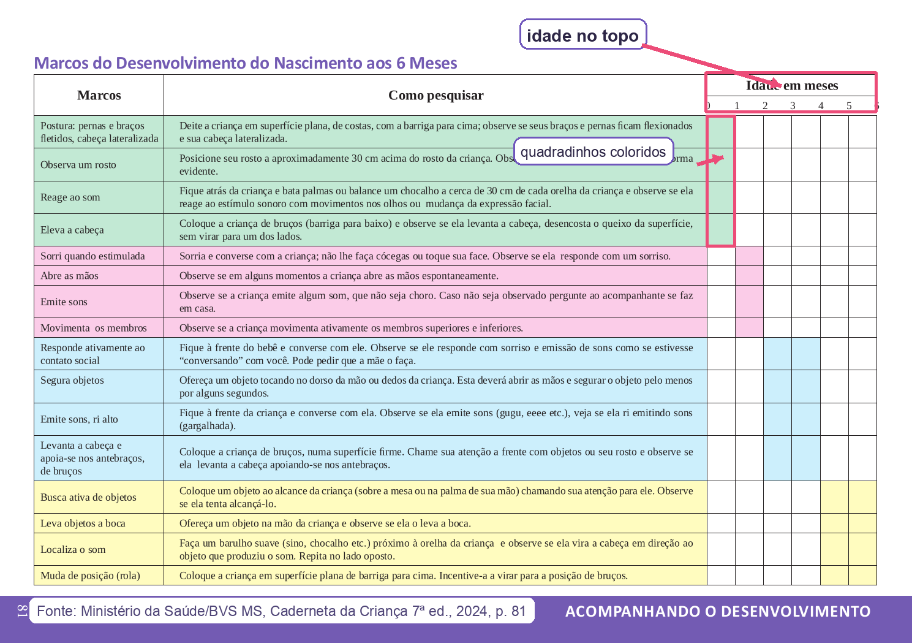
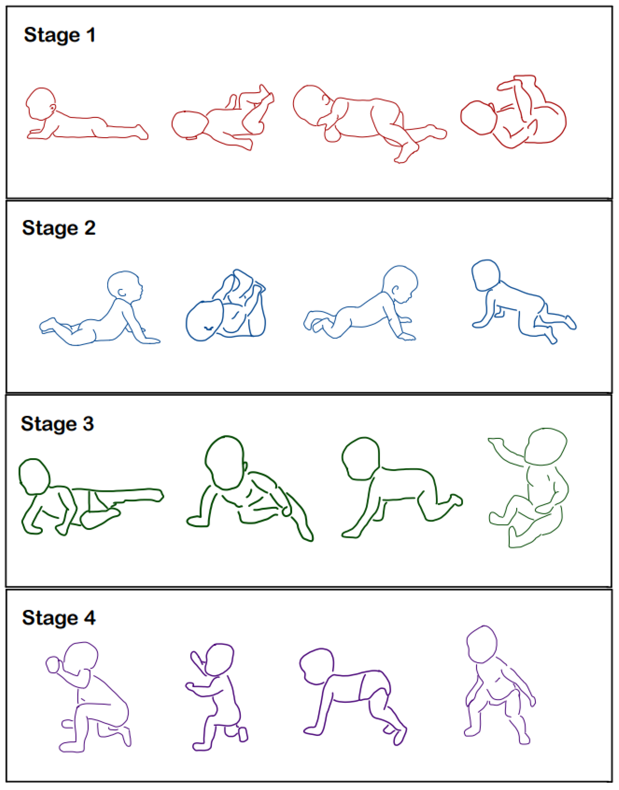
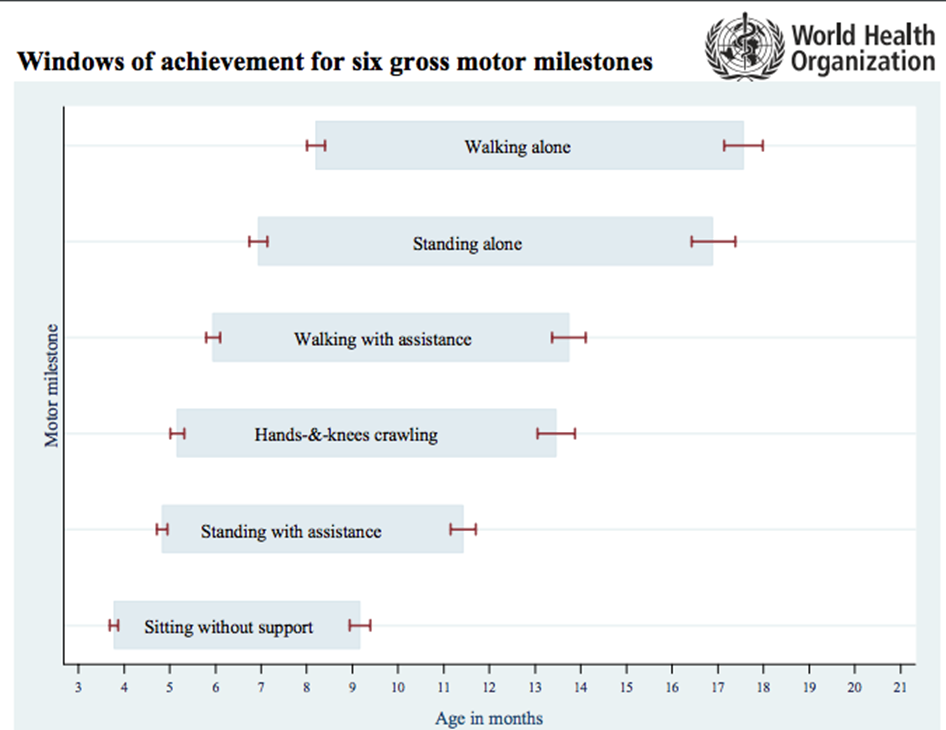
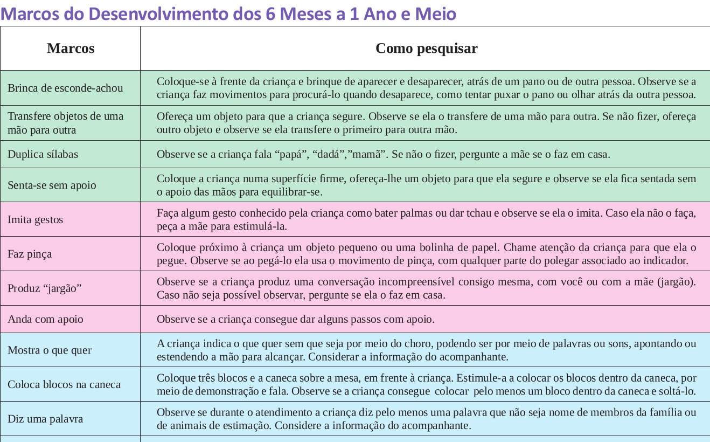
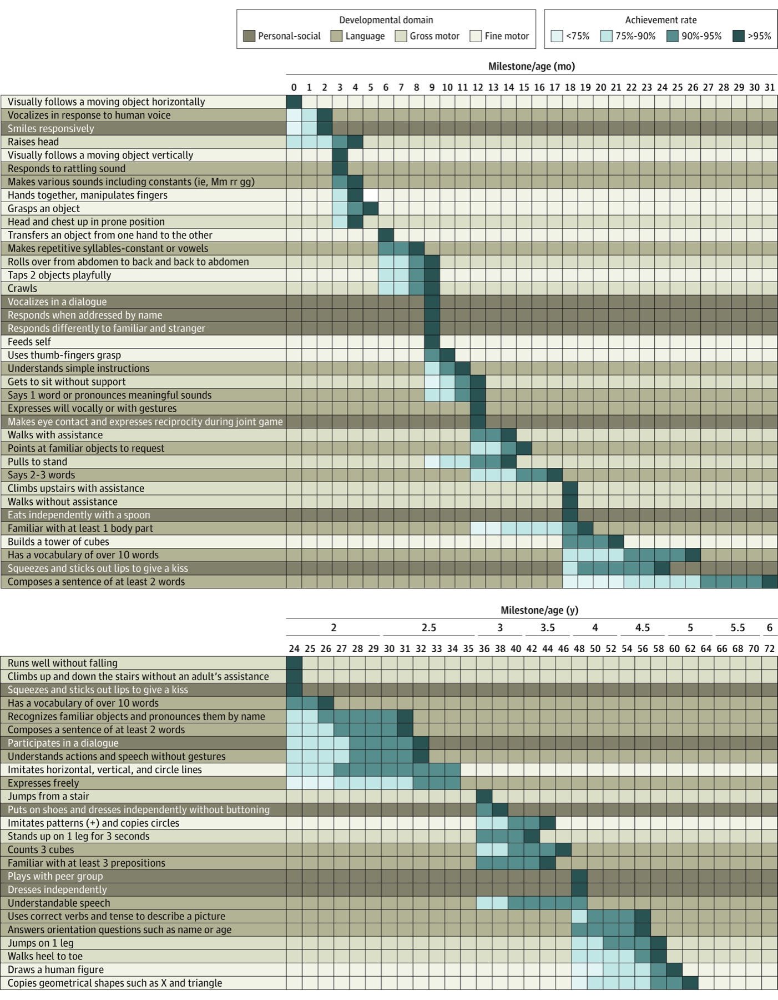
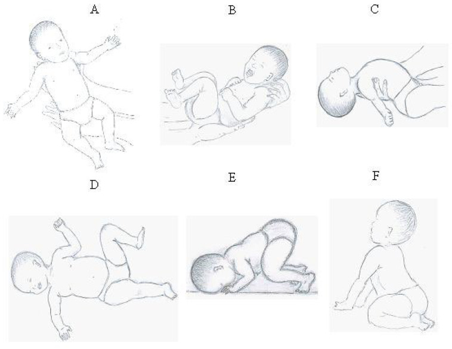
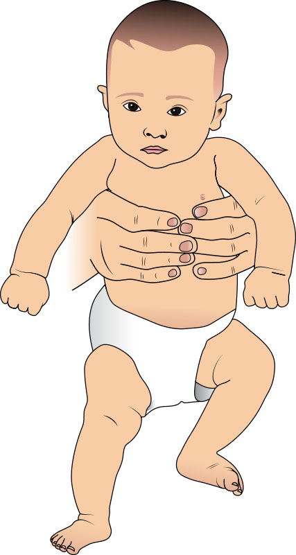

medir × julgar3 frentes · a prova quer 2marcos + reflexosprova × vida real
?
Pôr uma criança na balança e na régua e dizer "está crescendo bem" é quase mecânico: tem número, tem percentil, tem curva. Mas olhar para a mesma criança e afirmar "está se desenvolvendo bem" é incomparavelmente mais difícil. Por quê? Porque não há régua. Avaliar desenvolvimento é uma avaliação qualitativa, não quantitativa — e é justamente essa diferença que transforma um julgamento aparentemente simples no ponto mais sutil da consulta de puericultura.
Crescer tem número. Desenvolver não — e é aí que mora a dificuldade.
Ilustração de referência pendente
Reprodução da folha oficial do Instrumento de Vigilância do Desenvolvimento (Caderneta MS) — o documento que estrutura o tema.
Busca documentada inconclusiva — a ancoragem desta faixa está no esquema autoral e no texto.
Referência — imagem documentada em curadoria; folha de rosto do Instrumento de Vigilância do Desenvolvimento (Caderneta de Saúde da Criança / Ministério da Saúde).Pendência sinalizada · R1
Reconhecer mesmo sem a foto
O instrumento que a banca cita literalmente vive dentro da Caderneta de Saúde da Criança (o "livrinho da criança") — não é "só o cartão de vacina". É a folha oficial com as tabelas de marcos por idade. Reconhecer esse documento é metade da resposta: muitas questões abrem citando "o instrumento que integra a caderneta".
Medir é pôr na régua; julgar é outra coisa
Toda consulta de rotina da criança acompanha duas coisas em paralelo: o crescimento (peso, estatura, perímetro cefálico — quantitativo, comparável a uma curva) e o desenvolvimento (a aquisição progressiva de novas habilidades — qualitativo). A avaliação do desenvolvimento é infinitamente mais complexa que a do crescimento, e a razão é estrutural: crescimento se mede; desenvolvimento se interpreta. Não é só verificar "com quantos meses a criança senta ou anda" — é olhar vários aspectos em conjunto e decidir se uma habilidade ou um reflexo está presente ou ausente, decisão que, na beira do leito, é genuinamente difícil. Decidir se um reflexo apareceu, se um movimento conta como o marco esperado, se aquele sorriso é o sorriso que importa — nada disso vem com um número na tela.
Três frentes do acompanhamento — e as duas que a prova quer
O acompanhamento do desenvolvimento tem três frentes. A primeira é o exame neurológico da criança — avaliação de força, tônus e, dentro do possível, coordenação —, feito em qualquer fase, do recém-nascido ao lactente. A segunda é a verificação dos marcos do desenvolvimento: ao longo dos primeiros anos, a criança vai progressivamente alcançando a capacidade de realizar novas funções, e cada faixa etária tem seus marcos esperados. A terceira é a avaliação dos reflexos primitivos. Das três, a prova foca duas: os marcos do desenvolvimento — o mais importante, sem sombra de dúvida — e os reflexos primitivos. O exame neurológico detalhado não é aprofundado nas questões. Guarde esse recorte: é nos marcos e nos reflexos que a banca trabalha.
Por que a prova é mais gentil que a vida real
Há uma boa notícia para quem estuda. Na vida real, surgem dúvidas o tempo todo — identificar alterações finas do exame neurológico, decidir entre presente e ausente num caso ambíguo. Na prova, a história é mais simples e objetiva: o enunciado costuma dizer com todas as letras o que a criança faz e o que não faz, e o trabalho passa a ser puramente o de classificar — cruzar o que foi descrito com o que se espera para aquela idade. Isso muda a estratégia de estudo: o que se cobra não é a perícia clínica de reconhecer um marco titubeante, e sim saber o que é esperado em cada faixa etária e aplicar a regra. É um tema que se domina com método, não com sorte.
Interativo — o mapa conceitual das três frentes do acompanhamento — exame neurológico (apagado, não cobrado a fundo) × marcos do desenvolvimento × reflexos primitivos (os dois realçados, porque é onde a banca trabalha). Sem figura de criança: é organização de conceito. Toque num ramo para realçar a frente; os dois ramos vivos são marcos e reflexos.
Quiz fixação
A moldura qualitativo × quantitativo e o recorte da prova (marcos + reflexos).
Na consulta de puericultura, por que a avaliação do desenvolvimento é considerada mais difícil que a do crescimento?
Por que cada alternativa:
A) O desenvolvimento NÃO se baseia em laboratório — baseia-se em observação de habilidades. Por que cair na A: confunde "difícil" com "precisa de exame caro"; aqui a dificuldade é interpretativa, não tecnológica.
B) Certa. A dificuldade não vem de mais tecnologia, e sim da natureza do dado: peso/estatura/PC caem numa régua e num percentil; "sentou? sorriu? localizou o som?" exige um julgamento de presente × ausente que a balança não dá. Por isso a banca cobra o método, não a perícia de beira de leito.
C) Ambos são avaliados ao longo da vida toda, e o exame de desenvolvimento se faz desde o recém-nascido. Por que cair na C: inverte os fatos — quem se avalia "a vida toda" é o desenvolvimento, não o oposto.
D) Existe instrumento padronizado — o Instrumento de Vigilância da Caderneta (MS). Por que cair na D: a ausência de "régua" (qualitativo) é confundida com ausência de instrumento; o instrumento existe, ele só avalia qualitativamente.
Das três frentes do acompanhamento do desenvolvimento, quais são as duas que concentram o foco das provas?
Por que cada alternativa:
A) Inclui o exame neurológico detalhado, justamente a frente NÃO aprofundada em prova. Por que cair: parece "mais completo/mais médico" incluir o exame neuro — mas a banca trabalha onde há critério objetivo (marco esperado por idade).
B) Certa. As três frentes são exame neuro, marcos e reflexos; a prova prioriza marcos (o mais importante) e reflexos primitivos. O exame neurológico detalhado existe e é feito, mas não é o que se aprofunda nas questões.
C) Inclui o exame neurológico detalhado, que não é o foco. Por que cair: mesmo viés de achar que o exame neuro fino "conta" mais para a banca.
D) Mistura crescimento (outra avaliação, quantitativa) com desenvolvimento. Por que cair na D: o enunciado fala das frentes do desenvolvimento; crescimento é o eixo paralelo, não uma frente do desenvolvimento.
As 2 leis · crânio-caudal
4 áreassequencial · não pula etapacrânio-caudalcabeça → tronco → pernas
A criança SEMPRE
sustenta a cabeça antes de sentar, e senta antes de andar
vs
A criança NUNCA
anda primeiro e segura a cabeça depois
Isso não é coincidência nem "cada um no seu tempo": é uma lei do desenvolvimento, com nome e direção. Entender por que essa ordem é inviolável é entender o fio que organiza todo o primeiro ano de vida.
A criança não escolhe a ordem — a cabeça vai na frente, sempre.
Do "não fazia nada" ao pequeno ser humano: as 4 áreas
No início, o recém-nascido essencialmente respira, chora, evacua e urina. Ao final do primeiro ano, esse mesmo bebê virou um pequeno ser humano capaz de várias funções: já faz o movimento de pinça e já anda, ainda que com apoio. Para organizar esse salto, as habilidades são tradicionalmente separadas em quatro grandes áreas. (1) Motor grosseiro — locomoção e grandes grupamentos musculares: ficar sentado, andar, andar de triciclo. (2) Fino ou adaptativo — habilidades manuais: usar as mãos, fazer desenhos. (3) Pessoal-social — como a criança interage com o que a cerca, primeiro com a família, depois com grupos sociais cada vez maiores. (4) Linguagem — área superimportante; avaliar na vida real não é simples, mas na prova dá para entender o que importa. Toda faixa etária é avaliada nessas quatro áreas em paralelo.
A 1ª lei: sequencial, previsível, não pula etapa
O primeiro conceito a guardar: o desenvolvimento é um processo sequencial e previsível. Desenvolver-se significa adquirir a capacidade de realizar funções cada vez mais complexas — a cada etapa, a criança consegue algo mais difícil que o da etapa anterior. Existe um nível de complexidade crescente, e é por isso que o processo é sequencial, previsível e não pula etapas. A criança nunca leva um objeto à boca sem antes ter aprendido a agarrá-lo; nunca transfere de uma mão para a outra sem antes ter segurado. Essa previsibilidade é o que torna o tema "decorável com lógica": se você sabe a ordem, sabe o que vem antes e o que vem depois de qualquer marco. (Há uma única exceção famosa a essa sequência fixa — e ela aparece mais adiante, no marco do engatinhar.)
A 2ª lei: crânio-caudal — a cabeça lidera
A segunda lei dá a direção do desenvolvimento motor: ele é crânio-caudal (céfalo-caudal) — começa na cabeça e desce em direção aos membros inferiores. A criança primeiro desenvolve força, coordenação e tônus da cabeça, depois do tronco, depois dos membros inferiores. Daí a ordem inviolável: sustenta a cabeça → senta → anda. É exatamente por isso que a abertura desta página é uma lei, e não acaso: a perna só "funciona" depois que cabeça e tronco já estão prontos. Guardar o crânio-caudal é guardar a "historinha" que toda criança vive no primeiro ano — o fio que organiza, em ordem, cada um dos marcos que vêm a seguir.
🦵
Motor grosseiro
Locomoção e grandes grupos musculares: ficar sentado, andar, andar de triciclo.
✋
Fino / adaptativo
Habilidades manuais: usar as mãos, fazer a pinça, desenhar.
🙂
Pessoal-social
Como a criança interage com o que a cerca — família primeiro, depois grupos.
💬
Linguagem
Área superimportante; do choro à primeira palavra com significado.
Interativo — as 4 áreas do desenvolvimento, uma por card-ícone, cada uma com um exemplo curto: motor (locomoção) · fino-adaptativo (a mão) · pessoal-social (a interação) · linguagem (a fala). Ícones esquemáticos, sem realismo de criança. Toque numa área para ver seu exemplo.
Interativo — o eixo crânio-caudal numa silhueta neutra de bebê (sem rosto): a seta desce da cabeça (zona 1, sustenta a cabeça) ao tronco (zona 2, senta) aos membros inferiores (zona 3, anda). A direção do desenvolvimento — geometria, não retrato. A numeração 1→2→3 acompanha a seta dominante: a cabeça lidera.
Ilustração de referência pendente
Prancha clássica de atlas pediátrico com a progressão postural motora em sequência ilustrada de referência.
Busca documentada inconclusiva — a ancoragem desta faixa está no esquema autoral e no texto.
Referência — imagem documentada em curadoria; prancha de atlas/livro-texto de pediatria: progressão postural motora (decúbito → eleva a cabeça → senta → engatinha → anda).Pendência sinalizada · R2
Reconhecer mesmo sem a foto
A sequência postural ilustrada — decúbito → eleva a cabeça → senta → engatinha → anda — é o crânio-caudal em imagem: cada quadro só acontece depois que o anterior amadureceu. O esquema autoral ao lado já entrega a direção; a prancha de atlas (não foto de menor) reforçaria o reconhecimento da sequência.
Quiz fixação
As 4 áreas e as 2 leis (sequencial/não-pula × crânio-caudal).
Uma mãe relata que o filho "já dá uns passos com apoio, mas ainda não firma bem a cabeça quando puxado para sentar". Por que esse relato deve gerar desconfiança imediata?
Por que cada alternativa:
A) Andar com apoio é esperado por volta de 10-12m, não "após 18m". Por que cair na A: troca o foco da lei (ordem) por um número de idade decorado e errado.
B) Certa. O desenvolvimento motor é crânio-caudal — cabeça → tronco → pernas. Uma criança que "anda com apoio" mas "não firma a cabeça" estaria com a perna pronta antes da cabeça, fisiologicamente impossível no desenvolvimento normal. É exatamente esse tipo de incoerência que a banca planta.
C) Sustentar a cabeça é marco motor (controle de tônus cervical), não reflexo primitivo. Por que cair na C: confunde os dois eixos da aula (marcos × reflexos), que são distintos.
D) O problema não é "deveria andar mais" — é a ordem invertida. Por que cair na D: fixa-se no marco motor avançado e ignora que o pré-requisito (cabeça) está ausente.
Qual afirmação descreve corretamente a natureza do processo de desenvolvimento?
Por que cada alternativa:
A) O ponto central da aula é o oposto — a previsibilidade é o que torna o tema "decorável com lógica". Por que cair na A: a frase "cada um no seu tempo" do senso comum seduz, mas vale para o ritmo, não para a ordem.
B) Certa. O desenvolvimento é sequencial, previsível e de complexidade crescente — nunca uma função mais difícil antes de outra mais simples. A ressalva honesta (e cobrada): o engatinhar é a única etapa que nem toda criança normal realiza.
C) Estímulo não faz pular etapa; a sequência de complexidade se mantém. Por que cair na C: superestima o efeito do estímulo precoce, mito comum.
D) O sentido é crânio-caudal (cabeça primeiro), não o inverso. Por que cair na D: inverte a direção — pegadinha direta da lei.
A ferramenta-mestre · a tabela viva nasce
mesma habilidade, idades diferentesleitura em 5 passosfaltou? faixa anteriorfaixas que alargam
Ao final desta página você vai saber:
Por que a mesma habilidade ausente é inofensiva numa idade e grave em outra
O gesto de leitura da tabela em 5 passos (idade → coluna → quadradinhos → P → faixa anterior)
Quando parar de avaliar e quando "voltar uma faixa"
Por que as faixas etárias começam estreitas (1 mês) e vão alargando (3 em 3 meses)
Uma tabela, quatro quadradinhos e uma regra: o método que resolve quase toda questão.
A faixa etária muda tudo: o mesmo "não senta" inocente ou grave
Comece pelo raciocínio que dá sentido à tabela inteira. Um bebê de dois meses que ainda não senta — você se preocupa? Não. Uma criança de cinco anos que ainda não senta — você se preocupa? Evidentemente que sim. A habilidade é a mesma ("não senta"); o que muda tudo é a faixa etária. Uma habilidade pode estar ausente aos seis meses sem significado nenhum e, a mesma habilidade ausente em criança de um ano, sinalizar doença neurológica subjacente. Por isso não existe avaliar desenvolvimento "no geral" — existe avaliar contra a idade. A principal referência usada pelas bancas nos últimos anos é o Instrumento de Vigilância do Desenvolvimento, presente na Caderneta de Saúde da Criança. Vale uma correção de imagem: a Caderneta ("o livrinho da criança") é muito mais que cartão de vacina — a vacina é uma parte pequena dela; uma de suas funções centrais é fornecer o instrumento de avaliação do desenvolvimento, com tabelas de marcos ao longo dos primeiros anos.
A mecânica de leitura em 5 passos
A tabela é dividida por faixas (do nascimento aos 6 meses; dos 6 meses ao fim do 2º ano; depois o 3º ano). A leitura é sempre a mesma:
Passo 1 — Busque no topo a idade da criança em meses. Passo 2 — Desça pela coluna da idade até encontrar um conjunto de quadradinhos de cor diferente, posicionados imediatamente à esquerda da linha da idade. Passo 3 — Esse conjunto representa as quatro grandes habilidades (os quatro marcos) a pesquisar naquela criança — um por área. (Em cada idade acontece muito mais do que está na tabela, mas o instrumento é representativo do mais importante de cada faixa.) Passo 4 — Marco presente? Registra-se "P" de presente na caderneta. Se a criança tem todos os marcos da própria faixa presentes, encerra-se — não é necessário avaliar o que vem depois (pode-se, mas não precisa). Avalia-se o que está na faixa etária da criança. Passo 5 (a regra-mestre) — Se a criança NÃO faz tudo o esperado para a idade dela, então se avalia a faixa etária anterior — o conjunto de quadradinhos coloridos imediatamente à esquerda do conjunto do paciente. A presença/ausência dos marcos da faixa própria e/ou da anterior é o que permite classificar o desenvolvimento como adequado, alerta ou provável atraso (detalhado adiante).
Por que as faixas vão ficando mais largas
No início da vida, cada faixa corresponde a apenas um mês (até 1 mês; até 2 meses). Depois, as faixas passam a abranger intervalos: existe uma faixa de 3 a 4 meses — quem tem 3 avalia os mesmos marcos de quem tem 4. Avançando até o fim do 2º ano, os saltos passam a ser de três em três meses (7, 8 e 9 meses avaliam sempre os mesmos quatro marcos). Faz sentido o salto aumentar: o surgimento de novos marcos é mais intenso no primeiro ano e vai rareando depois. O que importa para a prova é simples de enunciar e difícil de dominar: saber o que é esperado em cada faixa etária. Tradicionalmente os marcos são mostrados até os 12 meses, mas aqui o conteúdo avança até 15 meses, porque há questão aberta que cobra as habilidades da Caderneta até essa idade.
Localize a idade (em meses) no topo
Desça a coluna até os quadradinhos coloridos à esquerda
Avalie os 4 marcos; presente = marca "P"
Todos os marcos presentes?
SIM → encerra (não precisa avaliar o que vem depois)
NÃO → avalie a FAIXA ETÁRIA ANTERIOR → segue para a classificação
Fluxo de decisão — a mecânica de leitura do Instrumento, do topo à classificação.
Aqui nasce o objeto que vai te acompanhar do começo ao fim — o Instrumento dos Marcos. Ele aparece com a faixa de 1-2 meses já visível, e vai sendo preenchido faixa a faixa à medida que cada idade é estudada. Toque numa idade para treinar a leitura: a coluna realça, e a faixa imediatamente à esquerda também — exatamente o gesto do Passo 5.
Instrumento dos Marcos · idade × 4 áreas
Área ↓ / Idade →
Motor grosseiro
PTC; eleva a cabeça em prono
movimenta os membros
a preencher
a preencher
a preencher
a preencher
a preencher
Fino-adaptativo
mãos fechadas (preensão palmar)
abre as mãos às vezes
a preencher
a preencher
a preencher
a preencher
a preencher
Pessoal-social
fixa o rosto; preferência pela face
sorriso social (estimulado)
a preencher
a preencher
a preencher
a preencher
a preencher
Linguagem
chora; reage ao som
vocaliza (vogais)
a preencher
a preencher
a preencher
a preencher
a preencher
Interativo — a tabela viva dos marcos NASCE aqui — só a faixa 1-2 meses preenchida; as demais ficam "a preencher" até serem hidratadas faixa a faixa. Toque numa idade para realçar os 4 quadradinhos da faixa e a faixa imediatamente à esquerda. É o mesmo objeto reusado em todas as páginas de marcos — e que, no fim, recebe os 3 casos plotados.

Tabela real do Instrumento (Caderneta MS, 0-6 meses) — a folha oficial da Caderneta com a grade de idade no topo e os quadradinhos coloridos por faixa à esquerda — o documento que a banca cita literalmente.Ministério da Saúde / BVS-MS, Caderneta da Criança: Menino — Passaporte da Cidadania, 7ª ed., 2024, p. 81 (recorte com cueing) · CC BY-NC-SA 4.0
Tabela real do Instrumento (Caderneta MS, 0-6 meses)
Conecte a folha real à leitura em cinco passos: primeiro localize a idade em meses no topo; depois encontre os quadradinhos coloridos da faixa; leia o marco na coluna da esquerda; registre P, A ou NV. O achado pedagógico está na grade de idade e nos blocos coloridos, não apenas no nome do marco. Esta é a matriz de marcos por idade — não o instrumento de classificação/conduta da página seguinte.
uso não comercial (NC)
Quiz fixação
A mecânica de leitura e a regra-mestre (faltou → faixa anterior).
Ao aplicar o Instrumento dos Marcos numa criança e constatar que ela não realiza uma das habilidades esperadas para a faixa etária atual, qual é o próximo passo correto na leitura da tabela?
Por que cada alternativa:
A) Falhar na faixa atual ainda não é provável atraso — pode ser só alerta; o provável atraso exige falha na faixa anterior. Por que cair na A: salta direto para a conduta mais grave sem completar a leitura.
B) Certa. A regra-mestre: faz tudo da faixa atual → encerra; faltou algo → olha a faixa anterior. É a faixa anterior que separa "alerta" (faz a anterior) de "provável atraso" (falha também na anterior).
C) Nunca se "compensa" olhando a frente; a tabela só anda para trás quando há falha. Por que cair na C: aplica uma lógica de "média" que não existe no instrumento.
D) Reavaliar em 30 dias é a conduta do alerta, não o passo de leitura da tabela. Por que cair na D: mistura o passo de leitura com a conduta (que só se define depois de classificar).
Por que a mesma habilidade ausente pode ser irrelevante numa idade e sinal de doença em outra?
Por que cada alternativa:
A) A tabela cobre vários anos (0-6m, 6m-2anos, 3º ano). Por que cair na A: confunde a estrutura por faixas com um limite de validade do instrumento.
B) Certa. Não senta aos 2 meses = normal; não senta aos 5 anos = grave. A habilidade é a mesma; a idade carrega o significado. Toda a lógica do instrumento é "esperado para esta faixa".
C) As 4 áreas importam, inclusive a linguagem (área "superimportante"). Por que cair na C: viés de achar que só o motor "conta" como desenvolvimento.
D) A ausência de marco já classifica por si — não depende de exame neuro alterado (que nem é a frente aprofundada). Por que cair na D: tenta tornar o marco "menos confiável" do que ele é no instrumento.
1-2 meses · a 1ª divergência MS×Nelson
PTC (esgrimista deitado)reage ≠ localiza o somsorriso social 2m × espontâneo 1mabre as mãos · vocaliza
Caderneta (MS) · 2 meses
sorriso social — quando estimulada, face a face
vs
Nelson · 1 mês
sorriso espontâneo — sozinho, do nada, sem ninguém estimulando
Mesmo gesto, idades diferentes, referências diferentes — e confundir os dois é exatamente o que a prova quer. São, na verdade, dois marcos distintos, e a página inteira gira em torno de separá-los.
Dois sorrisos, duas referências, dois meses diferentes — e a banca explora a confusão.
1 mês — postura tônico-cervical, fixa o rosto, reage (não localiza) o som
Motor/postura (1m): o recém-nascido mantém pernas e braços fletidos e a cabeça lateralizada (para um lado ou outro). É o padrão de quem tem tônus e motor grosseiro adequados, e tem nome: postura tônico-cervical (PTC) — presente durante todo o primeiro trimestre de vida. Motor (1m): em posição prona (de barriga para baixo), a criança já eleva a cabeça da superfície — coerente com o crânio-caudal: a cabeça vem primeiro, e por enquanto ela apenas eleva (ainda não sustenta plenamente). Pessoal-social/adaptativo (1m): o bebê fixa a visão e observa um rosto, com preferência pela face humana. Linguagem (1m): essencialmente chora, mas já reage a um som — uma reação inespecífica. Testa-se posicionando-se atrás da cabeça e fazendo um barulho (palma, chocalho): a criança responde com mudança de expressão facial ou movimento inespecífico. Atenção à pegadinha: aos 1 mês a criança ainda NÃO localiza o som — não se volta para a origem. Localizar vem mais adiante (5-6m).
2 meses — o sorriso social que a banca adora
Pessoal-social (2m): o marco-estrela — a criança sorri quando estimulada (sorriso social). E há regra de ouro contra a armadilha clássica: sorriso social ≠ cócegas. Não vale fazer cosquinha nem apertar a bochecha. Tem que ficar de frente para a criança, falando e sorrindo para ela; ela devolve o sorriso social — a forma mais rica de interação social dessa idade. Se o examinador fez cócega, não testou o marco.
A divergência-mestre: sorriso social (MS, 2m) × espontâneo (Nelson, 1m)
Aqui está a primeira divergência MS × Nelson, e ela é conteúdo de prova. A Caderneta (MS) descreve o sorriso social aos 2 meses (quando estimulada). O Nelson descreve que, com 1 mês, a criança já tem sorriso espontâneo — o bebê quietinho, sozinho, do nada, sorri. Esse sorriso espontâneo nem aparece na Caderneta. Não são versões conflitantes do mesmo fato: são dois fenômenos diferentes em idades diferentes. Numa questão, se a referência for a Caderneta (o default das bancas), o sorriso é o social, dos 2 meses; se a alternativa falar em sorriso espontâneo aos 3 meses, está errada — o espontâneo é do 1º mês (Nelson).
2 meses — abre as mãos, vocaliza, movimenta os membros
Fino/adaptativo (2m): a criança abre as mãos espontaneamente apenas em alguns momentos. Contexto: nos primeiros meses, por causa do reflexo de preensão palmar (apoia-se algo na palma e ela fecha a mão involuntariamente), o bebê passa grande parte do tempo com as mãozinhas fechadas. Em geral é a partir do fim do primeiro trimestre que ela abre as mãos voluntariamente — mas aos 2 meses já não pode estar com a mão fechada o tempo todo: em alguns momentos já abre. Linguagem (2m): surge um rudimento — a criança emite sons além do choro (com 1 mês era só choro); alguns chamam de vocalização — sons principalmente vogais, um fonema diferente do choro. Motor (2m): está movimentando os membros. Vale registrar: a avaliação motora dos primeiros meses na Caderneta não é muito detalhada — mas é o que está caindo nas provas.
Interativo — a postura tônico-cervical (PTC) numa silhueta neutra de RN (sem rosto): membros fletidos, cabeça lateralizada, rotulada PTC; ao lado, a miniatura "eleva a cabeça em prono". Geometria de postura, não foto. O realce está nos membros fletidos e na cabeça virada — o padrão do 1º trimestre.
Ilustração de referência pendente
Prancha de atlas publicado ilustrando o reflexo de preensão palmar e/ou a postura do lactente de 1-2 meses.
Busca documentada inconclusiva — a ancoragem desta faixa está no esquema autoral e no texto.
Referência — imagem documentada em curadoria; prancha de atlas/livro-texto pediátrico: reflexo de preensão palmar / postura do lactente nos primeiros meses.Pendência sinalizada · R4
Reconhecer mesmo sem a foto
O contexto da mão fechada vem do reflexo de preensão palmar: apoia-se algo na palma e a mão fecha involuntariamente — por isso o bebê passa os primeiros meses com as mãozinhas fechadas, abrindo só em alguns momentos aos 2 meses. A prancha de atlas (não foto de menor) ancoraria o ponto de apoio palmar e a flexão dos dedos; o texto já entrega o conceito.
A tabela viva ganha a faixa 1-2 meses
Instrumento dos Marcos · idade × 4 áreas
Área ↓ / Idade →
Motor grosseiro
PTC; eleva a cabeça em prono
movimenta os membros
a preencher
a preencher
a preencher
a preencher
a preencher
Fino-adaptativo
mãos fechadas (preensão palmar)
abre as mãos às vezes
a preencher
a preencher
a preencher
a preencher
a preencher
Pessoal-social
fixa o rosto; preferência pela face
sorriso social (estimulado)
a preencher
a preencher
a preencher
a preencher
a preencher
Linguagem
chora; reage ao som
vocaliza (vogais)
a preencher
a preencher
a preencher
a preencher
a preencher
Interativo — o Instrumento dos Marcos hidratado até a faixa 1-2 meses (motor = PTC/eleva a cabeça · fino = mãos fechadas/abre às vezes · social = fixa o rosto e sorriso social · linguagem = reage ao som/vocaliza). As faixas seguintes ainda aparecem como "a preencher". Toque em "1 mês" e em "2 meses" para comparar as duas colunas que você acabou de aprender.
Quiz fixação
PTC, o sorriso social × espontâneo e reagir ≠ localizar o som.
Numa prova que adota a Caderneta de Saúde da Criança (MS) como referência, qual é o marco pessoal-social esperado aos 2 meses — e o que o examinador deve fazer para testá-lo corretamente?
Por que cada alternativa:
A) O sorriso espontâneo é descrição do Nelson, ao 1 mês, e nem está na Caderneta. Por que cair na A: mistura as duas referências — o alvo da pegadinha da página.
B) Certa. Pela Caderneta, o marco dos 2 meses é o sorriso social, eliciado por interação face a face (falar e sorrir). É o "sorriso recíproco".
C) Cócega/apertar a bochecha NÃO testa o sorriso social (regra anti-cócega). Por que cair na C: acerta o marco mas erra a manobra — o examinador "produz" um sorriso que não é o social.
D) O riso alto/gargalhada é marco dos 4 meses, não dos 2. Por que cair na D: avança um degrau na escada social.
Um lactente de 1 mês, ao ouvir um chocalho atrás de sua cabeça, muda a expressão facial e se move, mas não vira a cabeça em direção ao som. Como classificar esse achado?
Por que cada alternativa:
A) Localizar aos 1 mês seria precoce demais. Por que cair na A: superestima a linguagem do RN, confundindo reagir com localizar.
B) Certa. Aos 1 mês, o esperado é reagir ao som (expressão/movimento inespecífico), não localizar. Virar-se para a fonte é marco de 5-6 meses.
C) Sustentação plena da cabeça não é pré-requisito para reagir ao som; aos 1 mês a criança só eleva a cabeça em prono. Por que cair na C: cria uma condição inexistente entre dois marcos independentes.
D) Reação inespecífica é justamente o achado normal — não sugere surdez. Por que cair na D: lê a ausência de localização (não esperada ainda) como déficit auditivo.
3-4 meses · perde a PTC · a 1ª pega
cabeça na linha médiaapoio nos antebraçospega cubital (escada da mão)ri alto
?
O que muda, exatamente, quando a cabeça do bebê finalmente para de ficar virada para um lado e se centraliza no meio — e por que a primeira vez que a mão "agarra" um objeto ela faz isso de um jeito tão desajeitado, usando a borda da mão em vez dos dedos?
Aos 3-4 meses a criança vira simétrica e dá a primeira pegada — torta de propósito.
A PTC cai: a cabeça na linha média e o apoio nos antebraços
A partir daqui a faixa abrange dois meses: avaliam-se os mesmos quatro marcos na criança de 3 e na de 4 meses. A grande mudança motora: a partir dos 3 meses a criança perde a postura tônico-cervical. A cabeça, antes lateralizada, centraliza-se na linha média; a criança fica mais simétrica. E ganha sustentação: já tem grande sustentação da cabeça e, em posição prona, eleva cabeça e tronco, apoiando-se nos antebraços (de bruços, ela se levanta nos antebraços). É a continuação direta do crânio-caudal — a cabeça, que aos 1 mês só elevava, agora sustenta e arrasta o tronco junto.
A primeira pega é cubital (e a divergência da nomenclatura)
Fino/adaptativo (até 4m): além de abrir as mãos em alguns momentos, a criança começa a agarrar um objeto de forma voluntária. A partir dos 3 meses ela já deve ter perdido o reflexo de preensão palmar e passa a segurar voluntariamente. Aqui entra a divergência MS × Nelson: a Caderneta registra apenas que a criança segura o objeto; o Nelson caracteriza melhor — aos 4 meses a pega é cubital. Pega cubital: usa-se a palma da mão junto com a borda cubital (borda interna/ulnar). Coloca-se um objeto grande (um controle de ar-condicionado, por exemplo) apoiado na mão, e a criança o agarra com os dedos da borda interna. (Referência anatômica: cubital × radial; medial × lateral.) Essa pega abre a escada da preensão que se percorre faixa a faixa: cubital (4m) → radial (6m) → pinça (10-12m) — sempre da borda de fora da mão em direção à precisão do polegar com o indicador.
Social e linguagem: contato sustentado, fonemas e a gargalhada
Pessoal-social (3-4m): a criança responde ativamente ao contato social — estabelece um contato mais prolongado e sustentado, mantendo-se mais tempo interagindo (emitindo sons, sorrindo). É a evolução lógica do sorriso social dos 2 meses. Linguagem (3-4m): os sons ficam um pouco mais complexos; aparecem fonemas ("gugu", "ê", "gru gru gru") — não só uma vogal solta como aos 2 meses. Pessoal-social/linguagem (4m): a criança ri alto (gargalha) — marco mais pessoal-social do que de linguagem. Há uma analogia útil para fixar: depois de meses tentando, a criança finalmente consegue agarrar um objeto — e, na hora em que agarra, dá a gargalhada. Conquista motora e riso alto chegam juntos.
Parte da literatura inverte a ordem cubital ↔ radial (algumas fontes descrevem a "radial-palmar" surgindo antes). A sequência adotada aqui — cubital 4m → radial 6m → pinça 10-12m — é a versão majoritária e a que o Nelson sustenta (preensão evoluindo "de fora para dentro", com participação progressiva do polegar). Não é erro: é variação de nomenclatura entre autores, e vale saber que ela existe.
Interativo — a perda da PTC em duas silhuetas neutras lado a lado: "antes — PTC (cabeça lateral)" × "agora — simétrica, apoio nos antebraços (cabeça na linha média, tronco elevado em prono)". O realce está na posição da cabeça: de lateral para o centro.
Interativo — a pega cubital numa mão esquemática: objeto grande apoiado na palma + a borda ulnar/cubital agarrando, com os eixos radial/cubital rotulados. Traço anatômico-funcional. A seta indica a borda cubital em ação — o primeiro degrau da escada da mão.
Tummy time: o bebê em prono constrói o controle cervical (3-4m) — o lactente de bruços — o exercício que constrói o apoio nos antebraços e a sustentação da cabeça na linha média, o marco motor desta faixa.Foto: Dobromir Dobrev, via Pexels · Pexels License (uso livre, inclusive comercial)
Tummy time: o bebê em prono constrói o controle cervical (3-4m)
O marco motor da faixa é o apoio nos antebraços em prono com a cabeça centralizada — o sinal grosseiro de que o controle cervical subiu a régua do crânio-caudal. O esquema autoral ao lado mostra o contraste com a PTC; a foto real traz o bebê na posição que constrói esse controle.
uso comercial · ok
A tabela viva ganha a faixa 3-4 meses
Instrumento dos Marcos · idade × 4 áreas
Área ↓ / Idade →
Motor grosseiro
PTC; eleva a cabeça em prono
movimenta os membros
perde a PTC; simétrica; apoia-se nos antebraços
a preencher
a preencher
a preencher
a preencher
Fino-adaptativo
mãos fechadas (preensão palmar)
abre as mãos às vezes
pega cubital (Nelson, 4m)
a preencher
a preencher
a preencher
a preencher
Pessoal-social
fixa o rosto; preferência pela face
sorriso social (estimulado)
contato social sustentado
a preencher
a preencher
a preencher
a preencher
Linguagem
chora; reage ao som
vocaliza (vogais)
fonemas (gugu); ri alto (4m)
a preencher
a preencher
a preencher
a preencher
Interativo — o Instrumento agora com a faixa 3-4 meses preenchida (motor = perde a PTC, simétrica, apoio nos antebraços · fino = pega cubital · social = contato sustentado · linguagem = fonemas, ri alto). Toque em "3-4 meses" e na faixa à esquerda (2 meses) para treinar a regra-mestre. Compare 2m × 3-4m: a cabeça que era lateral (PTC) agora centraliza.
Quiz fixação
A perda da PTC, a simetria e a escada da preensão (cubital → radial → pinça).
A perda da postura tônico-cervical, com a cabeça assumindo a linha média e a criança tornando-se simétrica, é esperada a partir de qual idade — e o que isso revela sobre o desenvolvimento motor?
Por que cada alternativa:
A) Ao 1 mês a criança ainda está em PTC e só eleva a cabeça em prono. Por que cair na A: antecipa a sustentação plena em dois meses.
B) Certa. A PTC dura o 1º trimestre e cai a partir dos 3 meses, quando a cabeça centraliza e a criança fica simétrica — o controle cervical amadurecendo na ordem crânio-caudal (cabeça antes do tronco).
C) Sentar sem apoio é marco de 7-9m, muito além da perda da PTC. Por que cair na C: salta da simetria (3m) direto para o tronco maduro (7-9m).
D) O sorriso social (2m) e a perda da PTC (3m) são marcos de áreas e idades diferentes. Por que cair na D: ancora a mudança motora num marco social próximo no tempo.
Sobre a evolução da preensão manual, qual sequência está correta segundo a caracterização adotada (Nelson)?
Por que cada alternativa:
A) Inverte a ordem da escada — a pinça é a aquisição mais tardia (10-12m), nunca a primeira. Por que cair: decora a pinça como "a pega" sem perceber que ela coroa a série.
B) Certa. A mão amadurece da borda para o polegar: cubital aos 4m (borda ulnar), radial aos 6m (o polegar entra) e pinça aos 10-12m (polegar + indicador, precisão).
C) Inverte a ordem da escada e coloca a pinça cedo demais. Por que cair: mesmo erro de não perceber que a precisão fina é a última a chegar.
D) O desenvolvimento é sequencial e previsível, e a preensão segue ordem fixa. Por que cair na D: aplica o falso "cada um no seu tempo" à ordem, que é invariável.
5-6 meses · rola e cai · localiza o som
rola (e começam os acidentes)localiza ≠ reagepega radialsentar com apoio (Nelson)
A criança rolou. Ótimo marco — e a partir de agora ela não pode ficar sozinha em superfície alta.
Rola — e por isso cai: o marco motor que vira alerta de segurança
Nova faixa de dois meses: 5 e 6 meses. Motor (grande marco): a criança rola — muda de posição. Consegue porque já desenvolveu cabeça e cinturão escapular e está desenvolvendo o tronco; com o tronco em desenvolvimento, executa o rolamento. A consequência prática é uma regra de ouro de puericultura: a criança pode cair — começam os acidentes, e essa criança não pode ficar desassistida em nenhuma superfície. É o marco em que a orientação de segurança domiciliar deixa de ser teórica.
Localiza o som (não só reage) e a pega radial
Aqui se fecha a pegadinha plantada lá na faixa de 1 mês. Localiza o som ≠ reage ao som: o menorzinho (1 mês) apenas reagia ao som (expressão/movimento inespecífico, sem virar a cabeça). Aos 5-6 meses a criança localiza o som — esconde-se atrás dela, faz um barulho/chocalho e ela se volta exatamente para o local de origem. É a mesma manobra de teste, resposta amadurecida. Fino/adaptativo (5-6m): a criança leva o objeto à boca — aos 6 meses é a idade de pegar as coisas e colocá-las na boca. E a pega evolui: descreve-se aqui a pega radial (divergência MS × Nelson) — a criança continua usando a palma (não só os dedos), mas com o polegar aperta o objeto contra a palma e leva à boca. É o degrau intermediário da escada da mão (cubital 4m → radial 6m → pinça 10-12m).
Social e a divergência do sentar com apoio (Nelson)
Pessoal-social (5-6m): a criança faz busca ativa de objetos — coloca-se um objeto à frente e ela projeta o tronco em direção a ele, demonstrando interesse pelo ambiente externo (esperado aos 6 meses). Há ainda uma divergência de faixa importante: a Caderneta, em 5-6m, traz apenas os marcos acima; o Nelson acrescenta que, aos 6-7 meses, a criança fica sentada com apoio — coloca-se a criança sentada, ela não cai imediatamente, fica sentada alguns instantes, mas logo projeta o tronco para frente e se apoia sobre os braços. Na faixa seguinte já se espera que sente sem apoio. E isto é a raiz de toda a divergência entre as referências: as faixas etárias do Nelson diferem das da Caderneta (o Nelson usa cortes como 6-7m e 7m, que não coincidem com as faixas 5-6m e 7-9m da Caderneta). Por isso o mesmo marco "muda de idade" conforme a referência — e por isso a prova se faz com senso crítico.
Interativo — o rolamento em 3 quadros (decúbito dorsal → lateral → ventral) numa silhueta neutra, com o alerta gráfico "não deixar em superfície alta". Conteúdo geométrico-sequencial. A seta de progressão mostra o movimento — e o aviso lembra: a criança que rola, cai.
Interativo — a pega radial numa mão esquemática (o polegar apertando o objeto contra a palma), em contraste lado a lado com a cubital da faixa anterior — a evolução cubital → radial. O realce está no polegar entrando em ação: o degrau intermediário da escada da mão.

Transição rolar → sentar no primeiro ano — a passagem dos painéis Stage 2 → Stage 3: rotação axial, apoio em membros superiores e dissociação entre cinturas, depois o sentar oblíquo/tripé com uma mão no solo.Maciak M. et al., Children, 2024, Figure 1 (MDPI) · CC BY 4.0
Transição rolar → sentar no primeiro ano
A transição esperada entre 5-7 meses aparece sobretudo no controle ativo do tronco e na capacidade de manter o centro de massa sobre a base pélvica — não apenas na criança "ficar colocada" sentada. Diferencial: sentar ativo em transição não é o mesmo que sentar passivo com almofada/colo, em que o ambiente sustenta o tronco e pode mascarar hipotonia axial.
uso comercial · ok
A tabela viva ganha a faixa 5-6 meses
Instrumento dos Marcos · idade × 4 áreas
Área ↓ / Idade →
Motor grosseiro
PTC; eleva a cabeça em prono
movimenta os membros
perde a PTC; simétrica; apoia-se nos antebraços
rola (e começam os acidentes)
a preencher
a preencher
a preencher
Fino-adaptativo
mãos fechadas (preensão palmar)
abre as mãos às vezes
pega cubital (Nelson, 4m)
leva à boca; pega radial
a preencher
a preencher
a preencher
Pessoal-social
fixa o rosto; preferência pela face
sorriso social (estimulado)
contato social sustentado
busca ativa; senta com apoio (Nelson 6-7m)
a preencher
a preencher
a preencher
Linguagem
chora; reage ao som
vocaliza (vogais)
fonemas (gugu); ri alto (4m)
localiza o som
a preencher
a preencher
a preencher
Interativo — o Instrumento com a faixa 5-6 meses preenchida (motor = rola · fino = leva à boca / pega radial · social = busca ativa / senta com apoio [Nelson] · linguagem = localiza o som). Toque em "5-6 meses" e na faixa à esquerda (3-4 meses). Repare: "reage ao som" (1m) virou "localiza o som" (5-6m) — mesmo eixo, resposta amadurecida.
Quiz fixação
O rolar (e a segurança), localizar × reagir o som e a pega radial.
Mãe de lactente de 6 meses, orgulhosa, conta que o bebê "já se vira sozinho na cama". Qual é a orientação mais importante a dar nesse momento?
Por que cada alternativa:
A) Rolar aos 6m é esperado, não tardio. Por que cair na A: lê um marco normal como atraso por desconhecer a faixa.
B) Certa. Rolar é marco motor normal de 5-6m E o início dos acidentes: a criança que rola cai de superfícies altas. A orientação de segurança domiciliar é a conduta-chave.
C) Sentar sem apoio é marco de 7-9m; aos 6m, no máximo, sentar com apoio (Nelson). Por que cair na C: avança um degrau do tronco.
D) Entre rolar (5-6m) e andar (10-15m) há vários marcos (sentar, engatinhar opcional, ficar em pé); não há "imediatamente". Por que cair na D: comprime a sequência motora, ignorando o crânio-caudal.
Em que a resposta ao som de um lactente de 5-6 meses difere da de um lactente de 1 mês?
Por que cada alternativa:
A) Há diferença clara — localizar não existe ao 1 mês. Por que cair na A: iguala duas faixas distantes por não saber a evolução.
B) Certa. Maturação da linguagem auditiva: aos 1 mês, reação inespecífica; aos 5-6 meses, localização (vira-se exatamente para a fonte).
C) Inverte as idades — quem localiza é o maior (5-6m). Por que cair na C: troca a direção da maturação.
D) A diferença é na resposta (reagir × localizar), não no estímulo. Por que cair na D: desloca o foco do marco para o método de teste.
7-9 meses · permanência do objeto · engatinhar opcional
esconde-achoulei da selva (agarra→solta→transfere)senta sem apoioengatinhar = exceção
Tudo na sequência segue a ordem — menos o engatinhar, que muita criança normal pula direto.
Permanência do objeto: o esconde-achou que prova que ela entende
A partir daqui a avaliação passa a ser de três em três meses: a criança de 7, 8 e 9 meses deve fazer os mesmos quatro marcos. Pessoal-social (7-9m): a criança brinca de esconde-achou (o "cadê?") — você se esconde, faz "cadê a mamãe?", reaparece, e ela acha graça. Esse marco traduz uma conquista cognitiva profunda: o sentido de permanência do objeto — saber que algo continua existindo mesmo fora do campo de visão. O contraste com os 6 meses é eloquente: o bebê de 6 meses que fazia busca ativa, ao ter o objeto escondido, perde o interesse na hora (para ele, o objeto "deixou de existir"). Até os 9 meses, a criança já tem permanência do objeto: quando você esconde, ela procura pelo objeto escondido, porque sabe que ele continua lá.
A lei da selva da mão: agarra, depois solta, depois transfere
Fino/adaptativo (até 9m): além de agarrar voluntariamente, a criança é capaz de soltar voluntariamente o objeto e de transferir objetos de uma mão para a outra. A ordem tem nome — a "lei da selva": primeiro a criança aprende a agarrar, só depois aprende a soltar — e quando aprende a soltar, transfere de uma mão para a outra. Não dá para transferir sem antes saber soltar. Aqui há divergência MS × Nelson: a Caderneta coloca a transferência aparecendo até os 9 meses; o Nelson já a espera até 7 meses. Linguagem (7-9m): a linguagem fica mais rebuscada — até 9 meses a criança duplica sílabas ("mamá", "papá", "dadá"), cada vez mais perto de uma palavra com significado. Divergência: o Nelson diz que aos 6-7 meses a criança já faz polissílabos vogais (repete o mesmo fonema ininterruptamente, "mamamama..."); a duplicação organizada de sílabas ("mamá", "papá") é o marco mais maduro, dos ~9 meses pela Caderneta.
Senta sem apoio — e a grande pegadinha do engatinhar
Motor (7-9m): espera-se que a criança sente-se sem apoio — fica sentada, sem apoio nenhum, brincando com um objeto, costas eretas, sem perder o equilíbrio. E agora a grande pegadinha: com 9 meses a criança engatinha? O engatinhar é uma etapa que nem todas as crianças realizam — há criança que não engatinha, e isso não significa nenhuma alteração do desenvolvimento. É a única exceção à regra da sequência fixa. Todas as demais etapas, toda criança normal realiza, e na ordem invariável: nunca leva à boca sem antes agarrar; nunca transfere sem antes ter segurado e levado à boca. A complexidade crescente se mantém — exceto o engatinhar. (Outra forma de avaliar força/tônus nessa fase: pôr a criança em pé apoiada numa mobília, e ela dá passinhos para trás e laterais apoiada, ex.: no sofá. Mas pela Caderneta, nessa faixa, basta avaliar se a criança fica sentada sem apoio.)
Interativo — a mini-linha-do-tempo da preensão em mãos esquemáticas: cubital (4m) → radial (6m) → pinça (10-12m), fechando a escada da mão (a pinça já aparece em destaque, antecipando a próxima faixa). A progressão vai da borda ao polegar+indicador: a mão amadurece de fora para dentro.
Interativo — o "senta sem apoio" numa silhueta neutra (costas eretas, sem mãos no chão, 7-9m), em contraste com o "senta com apoio" (mãos no chão) da faixa anterior. Geometria postural. O realce está na ausência de apoio dos braços — o tronco já se sustenta sozinho.
Marcos motores 7-12 meses (janelas WHO) — as faixas "sitting without support", "standing with assistance", "hands-&-knees crawling" e "walking with assistance" — o engatinhar entra como etapa possível, marcado como "opcional".WHO Motor Development Study, via LibreTexts (CC BY 4.0); fonte original WHO sob CC BY-NC-SA 3.0 IGO · CC BY 4.0 (página) · WHO NC-SA
Marcos motores 7-12 meses (janelas WHO)
Foque nas quatro faixas inferiores: a progressão de controle axial e transferência de carga. O texto da própria fonte explicita que 4,3% das crianças não exibem o engatinhar de mãos e joelhos — a evidência numérica de que é etapa opcional. Não confundir ausência isolada de engatinhar com atraso motor se há sentar estável, cruising e marcha com apoio em progressão.
uso não comercial (NC)
A tabela viva ganha a faixa 7-9 meses
Instrumento dos Marcos · idade × 4 áreas
Área ↓ / Idade →
Motor grosseiro
PTC; eleva a cabeça em prono
movimenta os membros
perde a PTC; simétrica; apoia-se nos antebraços
rola (e começam os acidentes)
senta sem apoio; engatinhar opcional
a preencher
a preencher
Fino-adaptativo
mãos fechadas (preensão palmar)
abre as mãos às vezes
pega cubital (Nelson, 4m)
leva à boca; pega radial
solta e transfere (lei da selva)
a preencher
a preencher
Pessoal-social
fixa o rosto; preferência pela face
sorriso social (estimulado)
contato social sustentado
busca ativa; senta com apoio (Nelson 6-7m)
esconde-achou (permanência do objeto)
a preencher
a preencher
Linguagem
chora; reage ao som
vocaliza (vogais)
fonemas (gugu); ri alto (4m)
localiza o som
duplica sílabas (mamá)
a preencher
a preencher
Interativo — o Instrumento com a faixa 7-9 meses preenchida (motor = senta sem apoio / engatinhar opcional · fino = solta e transfere · social = esconde-achou / permanência do objeto · linguagem = duplica sílabas). Toque em "7-9 meses" e na faixa à esquerda (5-6 meses). O esconde-achou (9m) é o oposto da busca ativa (6m): aos 6m o objeto "some"; aos 9m a criança procura.
Quiz fixação
A permanência do objeto, a lei da selva e a exceção do engatinhar.
Lactente de 9 meses senta sem apoio, transfere objetos de uma mão para a outra, duplica sílabas e brinca de esconde-achou, mas não engatinha. Como classificar o desenvolvimento?
Por que cada alternativa:
A) Engatinhar não é obrigatório — é a única etapa pulável. Por que cair na A: aplica a regra "não pula etapa" justamente à exceção que a contradiz.
B) Certa. O engatinhar é a única exceção à sequência fixa: nem toda criança normal engatinha, e não engatinhar não é atraso. Com os outros marcos da faixa presentes, o desenvolvimento é adequado.
C) O engatinhar não é um "marco ausente" que dispara alerta, porque não é exigido. Por que cair na C: trata o engatinhar como marco regular da faixa.
D) Não há marco ausente exigível, então não há encaminhamento. Por que cair na D: mistura a exceção com a lógica da faixa anterior (provável atraso).
O que a brincadeira de esconde-achou, esperada até os 9 meses, demonstra sobre o desenvolvimento da criança?
Por que cada alternativa:
A) Palavra com significado é marco bem mais tardio (12-15m). Por que cair na A: confunde o ganho cognitivo (permanência) com linguagem expressiva.
B) Certa. O esconde-achou traduz a permanência do objeto: a criança procura o que foi escondido porque entende que ele continua existindo — diferente do bebê de 6m, que perde o interesse imediatamente.
C) A pinça é motora-fina e de 10-12m; o esconde-achou é social/cognitivo. Por que cair na C: troca a área avaliada (social → fino).
D) Moro é reflexo primitivo, eixo distinto, e some bem antes. Por que cair na D: mistura marcos com reflexos.
10-15 meses · o par dos limites
pinça12m = COM apoio (limite)15m = SEM apoiopalavra 15m (MS) × 12m
12 meses
é o LIMITE para andar COM apoio
·
15 meses
é quando se exige andar SEM apoio
Repare na palavra: limite, não média. Aos 12 meses a criança não precisa andar sozinha — precisa andar com apoio; se aos 12m ela não anda nem com apoio, aí sim você se preocupa. E aos 15m a barra sobe: tem que andar sem apoio, com equilíbrio. Esses dois números, pareados, são uma das pegadinhas mais cobradas do tema.
Com apoio aos 12, sem apoio aos 15 — e 12 meses é limite, não média.
10-12 meses: pinça, imita gestos, jargão
Fino/adaptativo (10-12m): a criança faz o movimento de pinça — oposição perfeita entre polegar e indicador. É o topo da escada da mão (cubital 4m → radial 6m → pinça 10-12m): da borda grosseira à precisão fina. Pessoal-social (10-12m): a criança imita gestos — você bate palma, ela bate palma; você dá tchau, ela dá tchau ("vira um ser humaninho"). Linguagem (10-12m): a criança produz jargão (definido em detalhe na escada da linguagem — linguagem com a melodia de uma conversa, mas sem palavras com significado).
O par dos limites: 12m anda COM apoio (limite, não média)
Motor (10-12m): a criança anda com apoio. E aqui mora o ponto fino: 12 meses é a idade LIMITE para andar COM apoio — não é a idade média, é o limite. Se aos 12 meses ela não anda com apoio, há motivo de preocupação. As crianças, em geral, desenvolvem as habilidades antes da idade limite: andar sem apoio aos 12 meses é ótimo, mas não é exigido aos 12m — o que se exige aos 12m é andar com apoio. Confundir "limite" com "média" faz o aluno cobrar mais (andar sozinho aos 12m) do que a régua pede, e errar.
13-15 meses: mostra o que quer, blocos na caneca, diz uma palavra, anda SEM apoio
Pessoal-social (13-15m): a criança deve mostrar o que quer (além do choro) — ela aponta e verbaliza, e, dentro do que já fala, você entende melhor o que ela pede. Fino/adaptativo (13-15m):coloca blocos na caneca (no consultório usa-se uma caneca que não quebre e pequenos blocos; estimula-se a criança a colocá-los) — traduz motricidade fina. Linguagem (13-15m): até 15 meses a criança deve dizer uma palavra e nomear os principais membros da família (a própria Caderneta descreve como pesquisar cada habilidade). Divergência: em muitas referências (Nelson/Denver/CDC), até 12 meses a criança já deveria dizer algumas palavras com significado; mas o que tem aparecido nas questões é o da Caderneta — palavra até 15m. Motor (15m): a criança deve andar sem apoio, com equilíbrio e coordenação. Eis o par completo: 12m = anda COM apoio · 15m = anda SEM apoio.
Interativo — o par-limite em duas silhuetas neutras: "12m — anda COM apoio (mão na mobília/sofá)" × "15m — anda SEM apoio (equilíbrio próprio)". Geometria postural. O realce está na presença × ausência do apoio — o par que a banca pareia.
Interativo — a pinça em detalhe numa mão esquemática (oposição perfeita polegar-indicador), coroando a escada da preensão. O realce está no encontro polegar↔indicador — a precisão fina que fecha a coordenação manual do 1º ano.

Janelas da marcha: apoio → marcha independente (10-15m) — as faixas "standing with assistance", "walking with assistance", "standing alone" e "walking alone": a progressão de controle postural antigravitário para locomoção independente.WHO Multicentre Growth Reference Study, via LibreTexts · CC BY 4.0
Janelas da marcha: apoio → marcha independente (10-15m)
Não confundir "standing alone" (equilíbrio estático) com marcha: "walking alone" exige passos independentes, alternância de apoio e deslocamento. E qualquer contato com móvel/pessoa ainda mantém o marco como marcha assistida (com apoio) — o que ancora o par-limite: 12m com apoio, 15m sem apoio.
uso comercial · ok
A tabela viva fecha os marcos — 10-15 meses
Instrumento dos Marcos · idade × 4 áreas
Área ↓ / Idade →
Motor grosseiro
PTC; eleva a cabeça em prono
movimenta os membros
perde a PTC; simétrica; apoia-se nos antebraços
rola (e começam os acidentes)
senta sem apoio; engatinhar opcional
anda COM apoio (12m = limite)
anda SEM apoio (15m)
Fino-adaptativo
mãos fechadas (preensão palmar)
abre as mãos às vezes
pega cubital (Nelson, 4m)
leva à boca; pega radial
solta e transfere (lei da selva)
pinça (polegar + indicador)
blocos na caneca
Pessoal-social
fixa o rosto; preferência pela face
sorriso social (estimulado)
contato social sustentado
busca ativa; senta com apoio (Nelson 6-7m)
esconde-achou (permanência do objeto)
imita gestos
mostra o que quer; aponta
Linguagem
chora; reage ao som
vocaliza (vogais)
fonemas (gugu); ri alto (4m)
localiza o som
duplica sílabas (mamá)
jargão
diz uma palavra; nomeia a família
Interativo — o Instrumento dos Marcos COMPLETO — agora com 10-12 meses (motor = anda COM apoio · fino = pinça · social = imita gestos · linguagem = jargão) e 13-15 meses (motor = anda SEM apoio · fino = blocos na caneca · social = mostra o que quer/aponta · linguagem = diz uma palavra/nomeia a família). Toque em "10-12 meses" e em "13-15 meses" para fechar o par. A tabela está cheia: daqui em diante ela só será reusada para classificar e plotar os casos.
Quiz fixação
A pinça, o par 12m-com/15m-sem (limite ≠ média) e a divergência da palavra.
Criança de 12 meses na consulta de rotina. Qual é o marco motor que se exige nessa idade, segundo a Caderneta?
Por que cada alternativa:
A) Andar sem apoio aos 12m é ótimo, mas não exigido — o requisito é com apoio. Por que cair na A: confunde limite com média e cobra demais.
B) Certa. Aos 12 meses, o exigido é andar com apoio (12m é o limite para isso). Andar sem apoio é esperado só aos 15m.
C) Engatinhar nem é obrigatório (exceção da sequência). Por que cair na C: trata a etapa pulável como exigência.
D) Correr e subir degraus são marcos bem mais tardios (2º ano). Por que cair na D: avança vários meses na escada motora.
Numa prova que adota a Caderneta de Saúde da Criança como referência, até que idade se espera que a criança "diga uma palavra" (com significado)?
Por que cada alternativa:
A) Aos 9m a linguagem está em duplicação de sílabas ("mamá"), sem palavra com significado. Por que cair na A: confunde balbucio com palavra.
B) 12 meses é o corte de outras referências (Nelson/Denver/CDC), não da Caderneta. Por que cair na B: escolhe a referência internacional num enunciado que pede a Caderneta — a pegadinha exata da divergência.
C) Certa. Pela Caderneta, "diz uma palavra" e "nomeia membros da família" são marcos de até 15 meses — e é esse o corte que as bancas cobram.
D) 18m é faixa de consolidação (várias palavras), além do marco isolado de 15m. Por que cair na D: atrasa o corte.
A escada da linguagem · síntese de uma área
6 degraus de 1m a 15mjargão = prosódia sem significadopolissílabos vogais (Nelson)cada degrau pressupõe o anterior
Como reconhecer que a criança "está conversando" antes de saber qualquer palavra.
1mchora / reage ao somreação inespecífica
2mvocaliza vogaissom além do choro
3-4mfonemas ("gugu")mais que a vogal solta
até 9mduplica sílabas ("mamá")organizada
10-12mjargãoprosódia sem significado
até 15mdiz uma palavra+ nomeia a família
Escada — a escada da linguagem completa, do choro à primeira palavra — cada degrau é pré-requisito do seguinte. O Nelson acrescenta dois degraus mais precoces (polissílabos vogais 6-7m; palavra ~12m).
A escada completa: seis degraus de 1m a 15m
A linguagem, espalhada faixa a faixa ao longo de toda a avaliação, ganha aqui uma vista única. Ao 1 mês, a criança essencialmente chora e reage a um som (reação inespecífica). Aos 2 meses, surge a vocalização — sons além do choro, principalmente vogais, um fonema diferente do choro. Dos 3-4 meses, aparecem os fonemas ("gugu", "ê", "gru gru"), mais complexos que a vogal solta. Até os 9 meses, a criança duplica sílabas ("mamá", "papá", "dadá") — cada vez mais perto de uma palavra com significado. Dos 10-12 meses, vem o jargão. E até os 15 meses (pela Caderneta), a criança diz uma palavra com significado e nomeia membros da família. Vale a divergência já vista: o Nelson descreve polissílabos vogais aos 6-7 meses (repetição ininterrupta do mesmo fonema, "mamamama") — um degrau de balbucio mais precoce que a duplicação organizada da Caderneta.
Jargão: a conversa sem palavras
Jargão é uma linguagem incompreensível, mas que tem a prosódia de uma conversa — a melodia, o ritmo, as inflexões de quem está conversando. Percebe-se que a criança está "tentando contar uma história", com entonação de fala de verdade, mas sem usar nenhuma palavra com significado. É o degrau imediatamente anterior à primeira palavra: a criança já domina a música da língua (a prosódia) antes de dominar o conteúdo (o significado). Reconhecer jargão é reconhecer que a linguagem expressiva está a caminho, mesmo sem nenhuma palavra reconhecível ainda.

Recorte do Instrumento (Caderneta MS): como pesquisar a linguagem — a coluna "Como pesquisar" ao lado dos marcos de linguagem — o instrumento diferencia jargão ("conversação incompreensível") de "diz uma palavra" (palavra reconhecível, sem contar nomes de familiares/animais).Brasil, Ministério da Saúde, Caderneta da Criança: Menino — Passaporte da Cidadania, 7ª ed. rev., 2025, recorte da p. 82 · CC BY-NC-SA 4.0
Recorte do Instrumento (Caderneta MS): como pesquisar a linguagem
A própria Caderneta descreve o método: jargão é conversação incompreensível observada/referida; "diz uma palavra" exige palavra reconhecível durante o atendimento ou no relato, sem contar nomes de familiares ou animais. Isso evita confundir a duplicação silábica simples ("papá/dadá") com aquisição lexical de verdade.
uso não comercial (NC)
Quiz fixação
A escada da linguagem e o conceito de jargão (prosódia sem significado).
Uma criança de 11 meses emite uma "fala" incompreensível, mas com entonação, ritmo e melodia de uma conversa de verdade, sem nenhuma palavra com significado. Como se chama esse marco e em que faixa ele é esperado?
Por que cada alternativa:
A) Vocalização (2m) é só emissão de vogais, sem prosódia de conversa. Por que cair na A: iguala "emitir som" a "ter melodia de fala".
B) Certa. Jargão = linguagem incompreensível com a prosódia de uma conversa, sem palavras com significado — marco de 10-12 meses, o degrau anterior à primeira palavra.
C) Duplicar sílabas ("mamá") tem unidades silábicas repetidas, não a entonação de conversa do jargão. Por que cair na C: confunde dois degraus vizinhos da escada.
D) Não há palavra com significado — é justamente a marca do jargão (música sem conteúdo). Por que cair na D: lê a entonação como se já houvesse palavra real.
Qual é a ordem correta dos marcos de linguagem, do mais precoce ao mais tardio (referência Caderneta)?
Por que cada alternativa:
A) Embaralha a ordem (choro depois da vocalização; jargão antes da duplicação). Por que cair: decorar marcos soltos, sem a lógica de complexidade crescente, faz a ordem virar chute.
B) Certa. A escada vai do choro/reação ao som (1m) à primeira palavra (15m), passando por vocalização (2m), fonemas (3-4m), duplicação de sílabas (até 9m) e jargão (10-12m).
C) Coloca o choro depois de marcos mais complexos e inverte jargão/palavra. Por que cair: ordem decorada sem lógica de complexidade crescente.
D) Inverte completamente a sequência. Por que cair: ignora que a sequência é fixa (só o engatinhar, no eixo motor, é exceção).
A classificação que vira conduta
adequado · alerta · provável atrasoatual × anteriorPC ±2 z · ≥3 fenótiposnão vá além do enunciado
Ao final desta página você vai saber:
As 3 categorias do MS (adequado / alerta / provável atraso) e o que define cada uma
A conduta de cada categoria (puericultura / 30 dias / encaminhar à equipe multidisciplinar)
Os cortes exatos que viram provável atraso (PC, fenótipos, marcos da faixa anterior)
Por que nunca se classifica "além do que o enunciado informa"
Três cores, três condutas: o que vira retorno em 30 dias e o que vira encaminhamento.
Adequado: tudo da faixa atual presente
A tarefa-resumo: atender uma criança de qualquer idade, verificar se ela faz todas as habilidades esperadas para a idade e, a partir disso, classificar o desenvolvimento. O Ministério da Saúde propõe três categorias. Categoria 1 — Desenvolvimento adequado: a criança tem todos os reflexos/habilidades esperados para a faixa etária atual. Conduta: segue o acompanhamento de puericultura — retorna na próxima consulta programada pelo MS (não necessariamente mensal; as consultas vão se espaçando à medida que a criança cresce).
Alerta: falta na faixa atual OU há fator de risco
Categoria 2 — Alerta para o desenvolvimento: há dois caminhos para cá. (a) A criança tem ausência de uma ou mais habilidades para a faixa etária atual (o instrumento escreve "reflexos ou habilidades", mas na prática são as habilidades). (b) A criança faz tudo o esperado para a faixa, mas tem algum fator de risco. A lista de fatores de risco do MS é grande e inclui: prematuridade; peso ao nascer < 2.500 g; ausência ou insuficiência de pré-natal; intercorrências na gestação, parto ou nascimento; icterícia grave; hospitalização neonatal; doenças graves; consanguinidade dos pais; riscos ambientais/sociais (violência doméstica, suspeita de abuso, depressão materna, drogas/etilismo). Essas crianças são sempre consideradas de alerta, mesmo com todos os marcos presentes. Conduta no alerta:reavaliar em 30 dias, na atenção básica. (Ex.: uma criança de 9 meses cuja próxima consulta de rotina seria só aos 12m precisa ser revista em 30 dias — não se espera o calendário.)
Provável atraso: falha na faixa anterior, PC fora ou fenótipo
Categoria 3 — Provável atraso no desenvolvimento: a criança tem ausência de habilidades/reflexos para a faixa etária ANTERIOR. Implicação lógica: essa criança necessariamente também falha na faixa atual — porque, se fizesse tudo da atual, você nem teria ido olhar a anterior. Há três gatilhos adicionais de provável atraso, e aqui entram os cortes numéricos exatos (referência MS): a criança com perímetro cefálico (PC) > +2 ou < −2 escore-z (macro ou microcefalia); a criança com alterações fenotípicas sugestivas de síndrome genética — a fonte oficial MS especifica ≥ 3 alterações fenotípicas como gatilho; e, quanto aos marcos da faixa anterior, a fonte MS usa ≥ 2 marcos ausentes da faixa anterior nas faixas após o 1º ano, e ≥ 1 marco ausente no 1º ano (a leitura mais sensível, "uma ou mais", vale para o primeiro ano de vida). Os dois cortes coexistem por faixa — não se resolvem num só; é o ponto de classificação mais fino do tema. Não é preciso "voltar para trás" indefinidamente: numa criança de 4 anos que já salta, não se avalia se rola ou senta — assume-se que isso já foi adquirido.
A conduta de cada cor (e o limite "não vá além do enunciado")
Conduta no provável atraso (a diferença que cai em prova): seguindo o Instrumento de Vigilância do MS, essa criança deve ser encaminhada/referenciada para avaliação por equipe multidisciplinar — diferente do alerta, que é revisto em 30 dias na própria atenção básica. Resumindo o semáforo: adequado → puericultura/próxima consulta · alerta → 30 dias na atenção básica · provável atraso → encaminha à equipe multidisciplinar. E uma regra de ouro de prova: não se classifica além do que o enunciado informa. Se a banca só diz que a criança falha num marco da faixa atual, é alerta — mesmo que você "suspeite" de algo mais; só se vira provável atraso se o enunciado disser que ela também falha na faixa anterior (ou trouxer PC fora da faixa / fenótipo).
Adequado
Todas as habilidades da faixa ATUAL presentes.
conduta: segue puericultura / próxima consulta programada pelo MS.
Alerta para o desenvolvimento
Falta ≥1 habilidade da faixa ATUAL OU tudo presente porém com fator de risco (prematuro · PN < 2.500 g · risco social · etc.).
conduta: reavaliar em 30 dias na atenção básica.
Provável atraso no desenvolvimento
Falta de marco da faixa ANTERIOR (≥2 pós-1º ano / ≥1 no 1º ano) OU PC > +2 / < −2 escore-z OU ≥3 alterações fenotípicas de síndrome genética.
conduta:encaminhar à equipe multidisciplinar.
Faz tudo da faixa ATUAL?
SIM → tem fator de risco? Sim = Alerta (30 dias) / Não = Adequado (puericultura)
NÃO → Faz tudo da faixa ANTERIOR?
SIM → Alerta (30 dias)
NÃO → Provável atraso (encaminhar à equipe multidisciplinar)
Ramo lateral: PC > +2 / < −2 escore-z OU ≥3 alterações fenotípicas → Provável atraso direto.
Fluxo de decisão — a decisão de 3 saídas: atual × anterior, com o atalho do PC/fenótipo.
Prematuridade · peso ao nascer < 2.500 g · ausência ou insuficiência de pré-natal · intercorrências na gestação, parto ou nascimento · icterícia grave · hospitalização neonatal · doenças graves · consanguinidade dos pais · riscos ambientais/sociais (violência doméstica, suspeita de abuso, depressão materna, drogas/etilismo). Qualquer um deles torna a criança de alerta, mesmo com todos os marcos presentes.
Ilustração de referência pendente
Página/legenda de classificação do desenvolvimento da Caderneta (MS) com as faixas coloridas verde/âmbar/vermelho e as condutas.
Busca documentada inconclusiva — a ancoragem desta faixa está no esquema autoral e no texto.
Referência — imagem documentada em curadoria; reprodução da legenda de classificação da Caderneta (MS): faixas adequado/alerta/provável atraso.Pendência sinalizada · R10
Reconhecer mesmo sem a foto
A própria Caderneta usa as três cores — vermelho = provável atraso, amarelo = alerta, verde = adequado — com a conduta na coluna da direita. O semáforo autoral acima reproduz fielmente essas cores e condutas; a folha oficial (busca documentada inconclusiva como imagem aberta) ancoraria o reconhecimento visual.
Quiz fixação
As 3 categorias, as duas portas do alerta e a regra "não ir além do enunciado".
Criança de 9 meses, em puericultura, faz todos os marcos da faixa de 7-9m exceto um (não senta sem apoio). Não há relato sobre marcos da faixa anterior. Classificação e conduta?
Por que cada alternativa:
A) Provável atraso exige falha na faixa anterior (ou PC/fenótipo), não informada. Por que cair: "ir além do enunciado", supondo um déficit que o caso não descreve.
B) Certa. Falta de uma habilidade da faixa atual = alerta → 30 dias. Como o enunciado NÃO diz que ela falha na faixa anterior, não se pode classificar como provável atraso.
C) Falta de marco da faixa atual NÃO é adequado — adequado exige todos presentes. Por que cair na C: minimiza a ausência de um marco exigível.
D) Um marco da faixa atual ausente é alerta, não provável atraso. Por que cair na D: "ir além do enunciado", supondo falha na faixa anterior que não foi descrita.
Um lactente de 6 meses, nascido prematuro, apresenta todos os marcos esperados para a sua faixa etária. Como classificá-lo?
Por que cada alternativa:
A) Marcos presentes não bastam quando há fator de risco. Por que cair na A: esquece a 2ª porta do alerta (fator de risco).
B) Certa. Há duas portas para o alerta: faltar marco da faixa atual OU ter fator de risco. A prematuridade é fator de risco da lista MS — logo, alerta (30 dias), ainda que todos os marcos estejam presentes.
C) Prematuro NÃO é automaticamente provável atraso — é alerta; provável atraso exige falha na faixa anterior, PC fora ou fenótipo. Por que cair na C: superdimensiona o risco do prematuro.
D) Mesmo com PC normal, o fator de risco já classifica como alerta. Por que cair na D: cria uma condição que não anula o fator de risco.
A tabela aberta do lado · Sofia, Paulo e Carlos
Sofia 9m · alertaPaulo 4m15d · adequadoCarlos 10m · provável atrasonão vá além do enunciado
Sofia · 9 meses · faz quase tudo
Sofia tem 9 meses e está em puericultura na clínica da família. Ela brinca de esconde-achou, transfere objetos de uma mão para a outra, duplica sílabas — faz quase tudo o que se espera de uma criança de 9 meses. Quase: ela não senta sem apoio. A mãe pergunta se está tudo bem. Antes de responder, abra a tabela e pergunte: o que falta é da faixa dela ou de uma faixa anterior? A resposta muda a conduta inteira.
Paciente
Sofia, 9 meses — puericultura na clínica da família
Faz
esconde-achou, transfere objetos, duplica sílabas
Não faz
não senta sem apoio (marco da faixa atual, 7-9m)
A pergunta-fio
o que falta é da faixa atual ou da anterior?
Três irmãos, três idades, três classificações — e a tabela decide cada uma.
O combinado-mestre: questão de desenvolvimento se faz com a tabela aberta
Um combinado de método antes dos casos: questão de desenvolvimento se faz com as tabelas abertas do lado. É uma "decorebinha com lógica" — não se exige memória fotográfica dos marcos, exige-se saber ler. Para cada idade, olhe a tabela inteira: o que tem naquela idade, o que vem antes, o que vem depois. Com isso na mão, qualquer enunciado vira um exercício de localizar e comparar.
Sofia (9m) e a menina-conceito: alerta, não atraso
Sofia, 9 meses: faz esconde-achou (permanência do objeto, esperado até 9m), transfere objetos, duplica sílabas — mas não senta sem apoio. Sentar sem apoio é marco da faixa dela (7-9m). Logo, ela tem ausência de uma habilidade para a sua faixa etária → alerta para o desenvolvimento. Cuidado com a tentação de ir além: o enunciado não diz se ela falha em habilidade da faixa anterior. Se a banca tivesse dito (ex.: também não rola), poderíamos pensar em provável atraso do motor — mas não se pode ir além do que a banca informa. Conduta de Sofia: como é alerta, reaplicar o instrumento em 30 dias (não esperar até os 12 meses). Variação-conceito (menina de 9 meses): trazida à UBS, ao aplicar o Instrumento constatou-se pela primeira vez que ela não desenvolveu duas habilidades para a faixa atual; até então vinha dando conta de tudo. Como "até então dava conta de tudo", entende-se que na faixa anterior (até 6m) ela tinha tudo; agora, aos 9m, falham 2 habilidades da faixa atual → alerta (ainda não é provável atraso, pois faz a faixa anterior). Conduta: reaplicar em 30 dias.
O bebê de 6 meses do casal: o que se espera aos 6m
Casal de adolescentes, filho de 6 meses, na UBS, preocupados se o desenvolvimento está normal. Lactente nascido a termo, em aleitamento materno exclusivo. O que se espera de uma criança normal aos 6 meses? A resposta correta: segurar um objeto com as duas mãos, levá-lo à boca e rolar no leito. Sobre "segurar com as duas mãos": aos 6m a criança ainda não transfere; pode até segurar com uma só, mas é típica a imagem dela agarrando o objeto com as duas mãozinhas e levando à boca. Se um marco gerar dúvida, vá por eliminação.
Paulo (4m15d) × Carlos (10m): adequado × provável atraso
Paulo (irmão), 4 meses e 15 dias: localiza som, rola na mesa de exame, faz busca ativa de objetos e os leva à boca, porém não os transfere de uma mão para a outra. Como já completou 4 meses, avaliam-se diretamente os marcos de 5-6m, e ele faz tudo. Não transferir não é problema — a transferência é esperada só ao fim do nono mês. Paulo tem desenvolvimento adequado → segue puericultura. Carlos (irmão), 10 meses: senta-se sem apoio, busca e transfere objetos, mas não brinca de esconde-achou e não duplica sílaba. Aos 10 meses já se pesquisaria o esperado até 11 meses; mas ele não faz habilidades que já deveria ter aos 9 meses — esconde-achou (permanência do objeto) e duplicar sílabas são da faixa de 7-9m, ou seja, da faixa anterior. Logo, provável atraso no desenvolvimento → deve ser encaminhado. O contraste entre os irmãos é o resumo do tema: Paulo (falha só na transferência, que ainda nem é esperada) = adequado; Carlos (falha em marcos da faixa anterior) = provável atraso.
A tabela viva recebe os 3 casos plotados
O mesmo Instrumento dos Marcos, agora com os três irmãos lançados. Repare na cor: o "não transfere" de Paulo entra em cinza neutro (ainda não esperado, não conta); os ausentes de Carlos entram em vermelho na faixa anterior (7-9m) — é esse contraste que decide a conduta de cada um.
Instrumento dos Marcos · idade × 4 áreas
Área ↓ / Idade →
Motor grosseiro
PTC; eleva a cabeça em prono
movimenta os membros
perde a PTC; simétrica; apoia-se nos antebraços
rola (e começam os acidentes)
Asenta sem apoio; engatinhar opcional
anda COM apoio (12m = limite)
anda SEM apoio (15m)
Fino-adaptativo
mãos fechadas (preensão palmar)
abre as mãos às vezes
pega cubital (Nelson, 4m)
leva à boca; pega radial
Psolta e transfere (lei da selva)
pinça (polegar + indicador)
blocos na caneca
Pessoal-social
fixa o rosto; preferência pela face
sorriso social (estimulado)
contato social sustentado
busca ativa; senta com apoio (Nelson 6-7m)
Pesconde-achou (permanência do objeto)
imita gestos
mostra o que quer; aponta
Linguagem
chora; reage ao som
vocaliza (vogais)
fonemas (gugu); ri alto (4m)
localiza o som
Pduplica sílabas (mamá)
jargão
diz uma palavra; nomeia a família
Interativo —Sofia (9 meses) — presentes: esconde-achou, transfere, duplica sílabas (P verde); ausente na faixa ATUAL (7-9m): senta sem apoio (A vermelho). Falha só na faixa atual → Alerta / reavaliar em 30 dias.
Sofia · Alerta · 30 dias na atenção básica
Instrumento dos Marcos · idade × 4 áreas
Área ↓ / Idade →
Motor grosseiro
PTC; eleva a cabeça em prono
movimenta os membros
perde a PTC; simétrica; apoia-se nos antebraços
Prola (e começam os acidentes)
—senta sem apoio; engatinhar opcional
anda COM apoio (12m = limite)
anda SEM apoio (15m)
Fino-adaptativo
mãos fechadas (preensão palmar)
abre as mãos às vezes
pega cubital (Nelson, 4m)
Pleva à boca; pega radial
—solta e transfere (lei da selva)
pinça (polegar + indicador)
blocos na caneca
Pessoal-social
fixa o rosto; preferência pela face
sorriso social (estimulado)
contato social sustentado
Pbusca ativa; senta com apoio (Nelson 6-7m)
—esconde-achou (permanência do objeto)
imita gestos
mostra o que quer; aponta
Linguagem
chora; reage ao som
vocaliza (vogais)
fonemas (gugu); ri alto (4m)
Plocaliza o som
—duplica sílabas (mamá)
jargão
diz uma palavra; nomeia a família
Interativo —Paulo (4 meses e 15 dias) — faz tudo de 5-6m (localiza som, rola, busca ativa, leva à boca: P verde). O "não transfere" cai na faixa 7-9m, mas a transferência ainda nem é esperada na faixa dele — entra em cinza neutro (não conta).
Paulo · Adequado · segue puericultura
Instrumento dos Marcos · idade × 4 áreas
Área ↓ / Idade →
Motor grosseiro
PTC; eleva a cabeça em prono
movimenta os membros
perde a PTC; simétrica; apoia-se nos antebraços
rola (e começam os acidentes)
Psenta sem apoio; engatinhar opcional
anda COM apoio (12m = limite)
anda SEM apoio (15m)
Fino-adaptativo
mãos fechadas (preensão palmar)
abre as mãos às vezes
pega cubital (Nelson, 4m)
leva à boca; pega radial
Psolta e transfere (lei da selva)
pinça (polegar + indicador)
blocos na caneca
Pessoal-social
fixa o rosto; preferência pela face
sorriso social (estimulado)
contato social sustentado
busca ativa; senta com apoio (Nelson 6-7m)
Aesconde-achou (permanência do objeto)
imita gestos
mostra o que quer; aponta
Linguagem
chora; reage ao som
vocaliza (vogais)
fonemas (gugu); ri alto (4m)
localiza o som
Aduplica sílabas (mamá)
jargão
diz uma palavra; nomeia a família
Interativo —Carlos (10 meses) — presentes: senta sem apoio, transfere (P verde); ausentes na faixa ANTERIOR (7-9m): esconde-achou/permanência do objeto e duplicar sílabas (A vermelho). Falha na faixa anterior → Provável atraso / encaminhar.
Carlos · Provável atraso · encaminhar à equipe multidisciplinar

Quadro de marcos 6-9 meses (para conferir com a tabela aberta) — as linhas "transfers an object from one hand to the other", "makes repetitive syllables", "rolls over" e "crawls" concentradas na janela de 6 a 9 meses — a faixa onde se resolvem Sofia e Carlos.Sudry T. et al., JAMA Network Open, 2022;5(3):e222184, Figura 2 (via PMC/NCBI) · CC BY 4.0
Quadro de marcos 6-9 meses (para conferir com a tabela aberta)
Use o quadro para conferir "com a tabela aberta" enquanto resolve os casos: transferência e duplicação de sílabas estão na janela de 6-9m. Diferencial: um marco isolado discretamente tardio pode ser só vigilância; combinação de ausências (como Carlos) é o que dispara a triagem formal.
uso comercial · ok
Quiz fixação
Os casos resolvidos (atual × anterior) e a regra de eliminação.
Carlos, 10 meses, senta-se sem apoio e transfere objetos de uma mão para a outra, mas não brinca de esconde-achou e não duplica sílabas. Classificação e conduta?
Por que cada alternativa:
A) Fazer marcos avançados não compensa falhar nos da faixa anterior. Por que cair na A: impressiona-se com o que ele faz e ignora o que falta atrás.
B) Se a falha fosse só na faixa atual, seria alerta; mas é na anterior → atraso. Por que cair na B: não percebe que os marcos ausentes (esconde-achou, duplicar sílabas) são de 7-9m, faixa anterior aos 10m.
C) Certa. Aos 10 meses, esconde-achou e duplicar sílabas são marcos da faixa anterior (7-9m). Falhar na faixa anterior = provável atraso → encaminhar. (E ele necessariamente falha na atual também — senão não teríamos ido olhar a anterior.)
D) Ambos são marcos válidos e centrais (social/cognitivo e linguagem). Por que cair na D: desqualifica marcos legítimos por desconhecê-los.
Sobre o desenvolvimento neurológico do lactente, qual afirmação está correta?
Por que cada alternativa:
A) O RN tem predominância em flexão (membros fletidos, PTC), não extensão. Por que cair na A: inverte o tônus do recém-nascido.
B) Certa. A evolução motora é céfalo-caudal (crânio-caudal): cabeça → tronco → membros inferiores. As demais invertem ou atrasam fatos conhecidos.
C) O sorriso espontâneo (Nelson) é do 1º mês e nem está na Caderneta; o social é dos 2 meses — nenhum aos 3m. Por que cair na C: mistura as referências e atrasa o marco.
D) A sustentação da cabeça acontece muito antes de 5 meses (eleva em prono ao 1m, sustenta bem aos 3-4m). Por que cair na D: atrasa grosseiramente um marco precoce.
Um reflexo "normal" do recém-nascido é, muitas vezes, exatamente o mesmo movimento que, meses depois, vira sinal de doença neurológica. O Moro do RN é fisiológico; o Moro persistente aos 8 meses é bandeira vermelha. Se o movimento é idêntico, o que faz a diferença entre o normal e o patológico?
O reflexo certo, na criança certa, na idade errada — vira doença.
O que é um reflexo primitivo e o tripé de avaliação
Faz parte da avaliação do desenvolvimento o acompanhamento dos reflexos primitivos: respostas motoras automáticas e estereotipadas a um estímulo externo. A criança já nasce com alguns deles. São involuntários — faz-se um estímulo, espera-se uma resposta motora determinada. Ao longo dos primeiros meses, esses reflexos vão desaparecendo e são substituídos por movimentos voluntários e reflexos posturais. A avaliação de qualquer reflexo primitivo segue um tripé: (1) está presente na idade esperada? (2) é simétrico (igual dos dois lados, mesma intensidade)? (3) desapareceu no momento em que deveria desaparecer? Conforme o sistema nervoso amadurece, o reflexo tem que sumir — e a persistência além do prazo costuma indicar doença neurológica. Na prova, os quatro reflexos primitivos principais são: Moro, reflexo tônico-cervical assimétrico (RTCA), preensão palmar e preensão plantar.
Moro e RTCA (esgrimista): as duas manobras icônicas
Reflexo de Moro ("o reflexo mais bonitinho da pediatria"): pode ser pesquisado de várias formas — por exemplo, eleva-se o tronco da criança e deixa-se cair, segurando logo depois; ela faz um movimento de abrir e depois fechar os braços, com as mãozinhas abertas. Alguns autores descrevem que vem acompanhado de choro, mas isso não é obrigatório. Desaparecimento do Moro: some na forma completa até 3 meses e por completo até 6 meses — aos 3 meses a criança "não abre e fecha mais, só abre"; aos 6 meses, desaparece de vez. Persistência após esse período pode indicar doença neurológica.RTCA — reflexo tônico-cervical assimétrico (também chamado reflexo do esgrimista ou reflexo de Magnus-Klein): com a criança deitada, gira-se a cabeça para um lado; ela estica braço e perna do lado para onde a cabeça virou e flete os membros do lado oposto — a posição de esgrimista ("en garde"). Avalia-se para os dois lados. Desaparecimento do RTCA: em geral até 3-4 meses, coerente com a perda da postura tônico-cervical e a aquisição de postura simétrica. Persistência costuma indicar doença neurológica mais grave.
Preensão palmar e plantar — e a pegadinha do cutâneo-plantar
Reflexo de preensão palmar: apoia-se o próprio dedo na região palmar e a criança fecha a mão involuntariamente. Desaparecimento: em geral até 3-4 meses (a fonte SBP cita 4-6 meses; o momento de desaparecimento dos reflexos primitivos varia muito na literatura — registre a janela, não um ponto). A perda da preensão palmar conversa com a aquisição da pega voluntária (pega cubital aos 4m). Reflexo de preensão plantar: apoia-se o dedo abaixo dos pododáctilos (abaixo do dedão) e a criança faz movimento de preensão. Pegadinha: a preensão plantar NÃO é o reflexo cutâneo-plantar (Babinski fisiológico, extensão do hálux) — é um reflexo de preensão (flexão dos dedos). Desaparecimento: pode-se encontrar a descrição de que some até 15 meses, mas é um dos tempos mais controversos da literatura. (Distinção a guardar: a preensão plantar — flexão — some ~15m; o cutâneo-plantar persiste ~18m.)
Há quem associe o lado preferencial do reflexo tônico-cervical assimétrico a uma futura lateralidade (destro/canhoto). É curiosidade, sem valor de prova — não use como critério de classificação. O que cai é o tripé (presente/simétrico/some) e a regra de persistência.
Interativo — os 4 reflexos primitivos em painéis-ícone, silhueta neutra de RN (sem rosto): Moro (abre/fecha os braços, mãos abertas) · RTCA/esgrimista (cabeça virada, braço e perna estendidos de um lado, fletidos do outro — "en garde") · preensão palmar (dedo na palma, mão fecha) · preensão plantar (dedo abaixo do dedão, dedos fletem). Cada painel com o nome e a posição característica. O realce está no movimento-chave de cada reflexo — a posição de esgrimista é a mais icônica.
0m3m6m9m12m15m
Moro
completa ~3m / total ~6m
RTCA (esgrimista)
até ~3-4m
Preensão palmar
até ~3-4m (SBP 4-6m)
Preensão plantar
até ~15m (o mais controverso)
Linha do tempo dos reflexos — os 4 reflexos primitivos na linha do tempo — todos somem nos primeiros meses; persistir além do prazo é bandeira vermelha. Esta trilha é estendida na síntese final com a marcha automática (some) e o paraquedista (surge e fica).

Prancha de reflexos primitivos: Moro e RTCA/esgrimista — o Moro na fase de abertura (abdução/extensão dos braços após estímulo súbito, "abraço" em seguida) e o RTCA na postura de esgrimista (extensão do membro do lado da face, flexão contralateral).Tele-Heri B. et al., Children, 2025, Figure A1 (artwork: Noemi Balogh, via PMC/NCBI) · CC BY 4.0
Prancha de reflexos primitivos: Moro e RTCA/esgrimista
No Moro, a fase inicial é a abertura (abdução/extensão), seguida do fechamento em "abraço" e, muitas vezes, choro (não obrigatório). No RTCA, a rotação da cabeça gera a postura de esgrimista. Diferencial: não confundir Moro com startle simples ou espasmo; e não confundir RTCA fisiológico transitório com assimetria fixa (hemiparesia, lesão de plexo).
uso comercial · ok
Quiz fixação
O tripé do reflexo, a regra de persistência e a distinção plantar × cutâneo-plantar.
Por que um reflexo de Moro encontrado de forma completa aos 8 meses de idade deve ser valorizado como sinal de alerta?
Por que cada alternativa:
A) O Moro é fisiológico no recém-nascido. Por que cair na A: generaliza "alerta tardio" para "sempre patológico", esquecendo a janela normal.
B) Certa. O Moro é fisiológico no RN, mas tem que desaparecer (forma completa ~3m, total ~6m). Persistir além do prazo sinaliza comprometimento do SNC — a regra-mestre dos reflexos.
C) O esperado não é "Moro assimétrico aos 8m" — é Moro ausente aos 8m; assimetria é outro critério (do tripé) e em qualquer idade já seria anormal. Por que cair na C: mistura simetria com desaparecimento.
D) O choro não é obrigatório no Moro. Por que cair na D: eleva um detalhe opcional a critério de normalidade.
Qual afirmação sobre os reflexos do recém-nascido/lactente está correta?
Por que cada alternativa:
A) Preensão plantar (flexão dos dedos) ≠ cutâneo-plantar (extensão do hálux/Babinski). Por que cair na A: a pegadinha exata da página — confundir dois reflexos plantares distintos.
B) Os reflexos primitivos são fisiológicos por meses (Moro até ~6m, palmar ~3-4m, plantar ~15m). Por que cair na B: antecipa demais a "patologia", ignorando as janelas normais.
C) Certa. O tripé: presente na idade certa, simétrico, e desaparecido no momento esperado. É a estrutura de avaliação de qualquer reflexo primitivo.
D) A persistência além do prazo é sinal de doença neurológica — o oposto de "sem significado". Por que cair na D: inverte a regra-mestre dos reflexos.
Moro, RTCA, preensões, marcha automática — todos somem nos primeiros meses
vs
O paraquedista
aparece no fim do primeiro ano e fica para sempre
Por que existe um reflexo que, ao contrário de todos os outros, surge tarde e nunca mais sai?
Tudo some — menos o paraquedista, que chega no fim do primeiro ano e te protege a vida inteira.
Reflexos posturais: os que surgem, não os que somem
Além dos primitivos (que somem), existem reflexos que surgem ao longo dos primeiros meses: os reflexos posturais — movimentos automáticos que ajudam a manter a postura e o equilíbrio, em repouso e em movimento. Eles são o contraponto dos primitivos: enquanto os primitivos vão sendo substituídos, os posturais vão sendo adquiridos, à medida que o controle motor amadurece. Há uma questão-conceito clássica que explora isso: qual reflexo está presente numa criança normal aos 3 anos? Moro aos 3 anos? Não. Preensão plantar? Não. Tônico-cervical assimétrico? Não. Marcha automática? Não — a marcha automática (pega-se o RN, apoia-se o pezinho e ele faz um movimento de marcha involuntária) é um reflexo primitivo que desaparece nos primeiros meses.
O paraquedista: surge no fim do 1º ano e fica para sempre
A resposta da questão é o reflexo do paraquedista: surge no final do primeiro ano e fica para a vida toda. Projeta-se o tronco da criança para frente e ela estica os braços — em vez de cair de cara no chão. É a proteção contra a queda "para o resto da existência" (uma providência que protege a gente de cair de cara no chão, da infância à velhice). É o exemplo perfeito do reflexo postural: aparece quando o sistema motor está maduro o bastante para precisar dele, e não some mais. Contraste-síntese: marcha automática = primitivo, some nos primeiros meses; paraquedista = postural, surge ~12m e fica para sempre.
O recado-mestre: faça com a tabela aberta e senso crítico
Dois recados de estudo fecham o tema. Primeiro: nas semanas de questões, está liberada a "cola" — fazer os exercícios consultando as tabelas o tempo todo; é assim que se domina o tema. Mas atenção: uma ou outra questão não se baseará no instrumento do MS — existem também as tabelas do Nelson como referência paralela. Segundo, o recado-mestre: este é um tema para se resolver com senso crítico, sem ir "cheio de certeza", porque a resposta varia conforme a referência (MS × Nelson). Tendo essa noção — qual referência o enunciado adota, e onde elas divergem —, dá para desenrolar qualquer questão. A divergência não é um defeito do tema: é a própria competência que se cobra.
Interativo — o paraquedista numa silhueta neutra (tronco projetado para frente, braços esticados para proteger a queda), em contraste com a marcha automática (pezinho apoiado, passo involuntário). Painel "primitivo que some × postural que fica". O realce está nos braços esticados — a proteção que fica para a vida.

Marcha automática (stepping reflex): o primitivo que some — o lactente sustentado em pé, os pés tocando a superfície e a perna elevada marcando o passo involuntário — resposta automática esperada no início da vida e integrada nas primeiras semanas.OpenStax, Maternal Newborn Nursing, Figure 23.19 "Stepping Reflex" (Rice University) · CC BY-NC-SA 4.0
Marcha automática (stepping reflex): o primitivo que some
A imagem ancora o lado "primitivo-que-some" do contraste. Diferencie do paraquedista: nele, o achado fica nos membros superiores (extensão dos braços, abertura das mãos para proteção diante de queda anterior), surge mais tarde e persiste como reação postural protetora. Confundível clássico: não chamar marcha automática de "início de andar voluntário".
uso não comercial (NC)
O mapa-mestre: marcos + reflexos + condutas num só quadro
A figura-herói da aula — o quadro de revisão final que ensina o tema quase sozinho. Em cima, a linha do tempo de 1m a 15m com os marcos das 4 áreas em trilhas paralelas; sobreposta, a faixa de reflexos (os primitivos que terminam × o paraquedista que começa ~12m e não termina); e o box das 3 condutas (adequado/verde · alerta/âmbar · provável atraso/coral) com a regra "atual × anterior". Toque nos marcos, reflexos e condutas para explorar.
Síntese — o mapa-mestre do desenvolvimento neuropsicomotor — marcos das 4 áreas (1m→15m), os reflexos que somem × o paraquedista que fica, e as 3 condutas num único quadro de revisão. Pronto para ser consultado "com a tabela aberta" em qualquer questão.
Quiz fixação
O paraquedista (postural que fica) × marcha automática (primitivo que some).
Qual dos seguintes reflexos pode estar normalmente presente numa criança hígida de 3 anos de idade?
Por que cada alternativa:
A) Moro some até ~6m; persistir aos 3 anos é grave. Por que cair na A: lembra do Moro como "o reflexo do bebê" e esquece que ele some.
B) A preensão plantar some ~15m. Por que cair na B: o tempo tardio (~15m) engana, mas ainda está muito longe dos 3 anos.
C) O RTCA some até ~3-4m. Por que cair na C: confunde a postura do esgrimista (icônica) com algo duradouro.
D) Certa. O paraquedista é um reflexo postural que surge no fim do 1º ano e fica para a vida toda — logo, está presente aos 3 anos (e no adulto). Todos os demais são primitivos que já deveriam ter sumido.
Qual é a diferença fundamental entre a marcha automática e o reflexo do paraquedista?
Por que cada alternativa:
A) Só o paraquedista é postural/duradouro; a marcha automática é primitiva e some. Por que cair na A: iguala dois reflexos que parecem "de andar/equilíbrio".
B) Certa. Marcha automática = primitivo, some cedo. Paraquedista = postural, surge ~12m e fica. É o contraste-síntese "primitivo some × postural fica".
C) Inverte os dois — quem surge no fim do 1º ano é o paraquedista, e a marcha automática está presente ao nascer. Por que cair na C: troca as cronologias.
D) O paraquedista NÃO desaparece — fica para a vida. Por que cair na D: aplica a regra dos primitivos (somem) ao postural (que fica).